1My Inner Universe
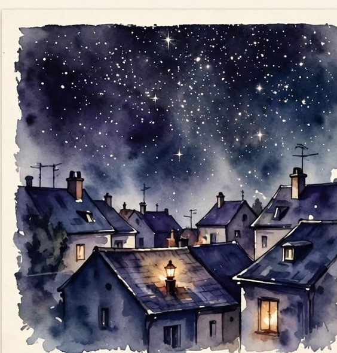
A dome opening slowly over a quiet hill, the first stars coming out above the trees
Every person carries a universe. This is the principle on which the whole hall is built, and it is stated once, plainly, at the door: the sky inside a life is not a figure of speech for something smaller. It has weather and distance, bright regions and unmapped ones, old light still travelling toward the present. The Observatory Desk keeps a register of such skies, one entry per citizen, and the entries are never short. It is entered in the register like any other country: real, inhabited, and larger than its reputation. A universe is not smaller for being carried quietly.
The metaphor is deliberate, and the estate is honest about it. No telescope is issued at the door, because none would help; the inner sky is observed the way one observes anything vast and near — slowly, repeatedly, and with respect for what refuses to resolve. Some nights the dome is clear and the whole arrangement can be taken in at a glance. What any given citizen finds up there is their own affair; the desk guarantees only that the stairs are worth climbing. Other nights there is cloud, and the Keeper logs the cloud, because the cloud is also part of the sky.
Visitors sometimes apologise for the size of their universe, as if acreage were the measure. The register corrects them gently. It is not the acreage; it is the keeping. A tended sky, however modest its chart, outshines a neglected immensity. It has settled the matter for surveyors who arrived, over the years, prepared to be disappointed by the size of their portion, and who left the dome carrying a work list instead of an apology. So the tour begins where all honest astronomy begins: with the admission that there is more overhead than anyone supposed, and that it was there the whole time.
2The Night I First Looked In
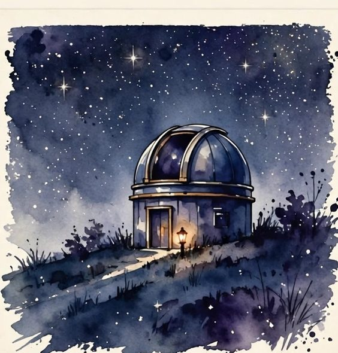
A child standing at a tall window after bedtime, forehead near the glass, stars beyond the garden
Most citizens remember, if pressed, the approximate night they first looked in — not out, in — and found that the interior had a sky of its own. It rarely happens in childhood, though children suspect it. It tends to happen later, in some unremarkable hour: a train window, a hospital corridor, a kitchen at three in the morning. Nothing in the outer biography changes its wording that week, which is how the citizen knows the event was real and not a performance. The outside world goes briefly quiet, and the inside, unobserved for years, is discovered to have been shining the whole time.
The discovery is not always comfortable. A sky implies distance, and distance implies regions of oneself that cannot be reached by supper time. The first look inward often shows more territory than the citizen believed they owned, and some of it unlit. The register has a standard entry for this moment, written in the Keeper's driest hand: survey begun. Nothing more is required that night. Those nearby notice only a brief quietness at the table, as if a window in a far room of the house had been opened and the citizen were listening to the air come in. The survey is the event.
What changes afterwards is small and total. The citizen begins, without ceremony, to keep hours with their own sky — a few minutes of looking up, inward, before sleep or after waking. The universe does not demand more than that at first. It asks only to be acknowledged as a place, with its own geography and rights. Acknowledged, it settles. A few even begin, in the weeks that follow, to keep a private log: two lines a night, no more literary than a ship's record, and worth more. A sky that knows it is seen behaves differently from one that has been ignored for decades.
3Not Small, Only Unmapped
The commonest error in the register's early entries is the word small. Citizens describe their inner universe as small the way travellers once described oceans they had not crossed. The Keeper strikes the word wherever it appears and substitutes the accurate one: unmapped. A sky is not diminished by the absence of a chart. Old atlases are full of such courtesies, in which whole oceans were apologised for by the men who had merely failed to sail them. The stars in the unvisited regions burn at their usual rate, indifferent to whether anyone has named them yet.
Mapping, in this estate, is a slow and honourable trade. It is not done by conquest; nobody storms an inner continent. It is done by return visits — by noticing, over years, which thoughts recur like seasons, which memories hold fixed positions, which distances shrink with familiarity and which honestly do not. The coastlines that emerge from such patience are not always the ones the citizen hoped for, but they have the distinguishing virtue of being true. The chart grows at the speed of attention, and attention, the Keeper notes, cannot be hurried without falsifying the coastline.
There is comfort in the correction, and the comfort is earned. To call the universe unmapped is to say the fault lies with the survey, not the territory. The citizen who once apologised for smallness begins instead to budget for exploration: an hour here, a question there, a longer look at the region always avoided. The sky does not shrink. The map grows. Neighbours, consulted late in life about the size of a person's inner country, have a way of reporting that it grew — when what grew was only the survey. In the register's experience, that exchange has never once disappointed the person who made it.
4The Sky Does Not End at the Skin
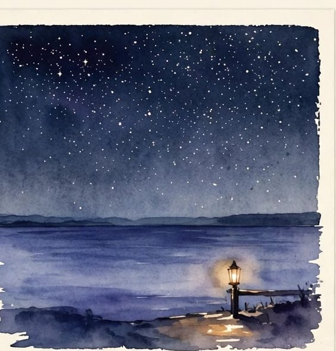
Morning mist lying over fields beyond a garden fence, the boundary nowhere to be found
It is natural to assume the inner universe is contained — that it stops where the person stops, neatly, at the skin. The register's older surveys suggest otherwise. The sky inside a life extends into whatever that life has touched: the rooms it has kept, the people it has loved, the work left standing in the world like outbuildings. The boundary, searched for honestly, behaves like a horizon. A letter written at midnight in one city and read at dawn in another is a small working model of the arrangement. It recedes in good order and never quite files the paperwork.
This is not mysticism; it is bookkeeping. A grandmother's phrases still rising in a grandchild's mouth are sky, by any working definition — light from a source, arriving across distance, still warm. The desk therefore records the inner universe as a property with generous and disputed borders, some of it held jointly, some of it on long loan to others. Debts live out there too, and so do kindnesses not yet repaid, all of them entered in the same generous ledger. Citizens are often surprised to learn how much of their weather is made in skies they do not wholly own.
The practical consequence is a certain care at the fences. If the sky does not end at the skin, then what a person sends outward — tone, attention, the climate of their company — is not exported weather but shared sky. The Keeper's rule is posted by the dome door and requires no enforcement: tend your portion as if the neighbours could see it. The Keeper is aware this makes the chart untidy, and has declined, on every occasion offered, to tidy it. In the only sense that matters, they are standing under it too.
5The Vastness Nobody Sees from Outside
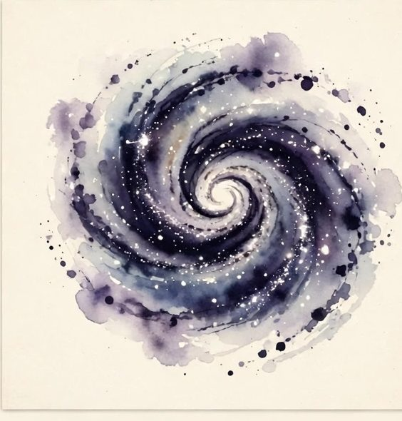
A modest house at dusk, one window lit, the hills behind it enormous under early stars
From outside, a person presents a frontage: a face, a manner, a set of known opinions, the usual acreage of a biography. From inside, the same person is a vastness that nobody sees — and the disproportion is not a deception but a condition of the architecture. Even the longest friendship surveys only the lit coastline. What the visitor sees — the coat, the conversation, the practiced opinions — is the harbour works, not the ocean behind them. The register is full of quiet citizens whose interior, properly entered, would take a season to cross.
The estate does not treat this as a tragedy of loneliness, though it can be one. It treats it as a fact of scale, like the fact that an iceberg's courtesy portion shows above the waterline. What is owed to others is not the whole survey; no one has the hours, and the sky was not built for tours. Silence, in such a country, is not an absence of content; it is content that has not applied for an audience. What is owed is accuracy in the part that shows — that the coastline on display be a true coast, belonging to the actual continent behind it.
There is a dignity in unvisited vastness that the desk is careful to record. A person is not required to be fully known to be fully real, any more than a country is required to be fully travelled. Some regions of the inner universe are kept the way forests are kept: not hidden in shame, simply not cleared. The Keeper logs them without coordinates. Their existence on the chart is enough. Even the Keeper, whose business is other people's skies, claims no more than a coastline acquaintance with any of them. The rest is the owner's.
6Stars I Was Born With
Among the first entries in any survey are the stars the citizen was born with: the fixed temperamental lights, present before memory, unchanged by every later rearrangement. A native quickness. A native caution. A certain humour that arrived with the furniture and has survived every redecoration since. These are not achievements and not faults. They can be detected early, these lights, in the child's unvarying answers to the great questions, delivered long before the child has learned which answers are fashionable. They are the original lighting of the sky, and the register records them without applause or apology.
Much early confusion comes from mistaking these stars for choices. Citizens reproach themselves for a brightness they never installed, or credit themselves for a steadiness that was simply issued. The Observatory Desk is firm on the distinction, because the whole moral bookkeeping improves once it is made: what was born in the sky is to be governed, not graded. One does not praise a pole star. The misgrading of born stars accounts, in the desk's estimation, for a melancholy share of the register's saddest early entries. One steers by it, or declines to, and that is where character actually lives.
Age tends to reconcile people to their founding stars. The quick one stops apologising for speed and learns ballast; the cautious one stops envying speed and learns what their steadiness has quietly saved. The lights themselves do not change. What changes is the citizen's treaty with them — from argument to administration. It is usually at this point that the citizen stops asking the sky to be different and starts asking, instead, what the sky they have is for. The register calls this the first maturity of the sky: when the born stars are no longer debated, only used.
7The Quiet Between Stars
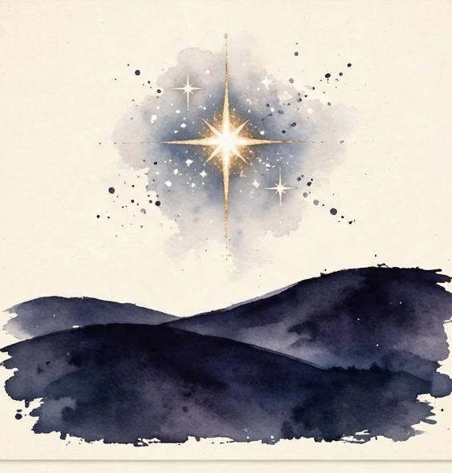
A dark field far from any town, the sky deep and unbusy between its scattered lights
Beginners, charting their sky, attend only to the stars — the bright events, the named memories, the fixed lights of temperament. The Keeper directs their attention, sooner or later, to the quiet between stars: the long unremarkable stretches of an ordinary inner life, where nothing is shining and nothing is wrong. These stretches compose most of the sky. City skies, drowned in lamplight, have forgotten this, which is why the estate sends its beginners to the country of their own interior at night. A survey that ignores them is a survey of punctuation with the sentences left out.
The quiet is not emptiness, though it is often misread as such by citizens accustomed to measuring themselves by events. It is the medium the lights live in — the resting dark in which the eye recovers and the next star becomes visible at all. Lives, like skies, require a certain amount of unlit room in order for anything to be seen clearly. It is rest with the lights off, and the house is entitled to it. The desk has observed that the people who fear their quiet intervals most are usually the ones who have never been properly introduced to them.
So the survey learns to log the dark stretches with the same respect as the bright ones: unfeatured afternoons, unstoried years, the plain weather of getting through. Nothing in them needs redeeming. When the whole sky is finally charted, it is the quiet that makes the pattern legible — the stars stand out because the dark was allowed to be dark. The quiet does not ask to be filled, interpreted, or improved; it asks only to be left in the survey, where it belongs. A sky at peace with its own quiet is a sky that can be lived under.
8Distance Is Not Emptiness
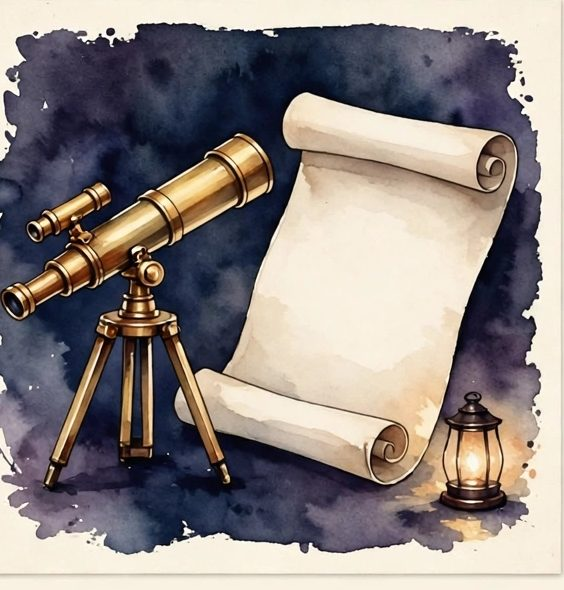
Two farmhouse windows glowing far apart across a night valley, the dark between them full and calm
There are regions of the inner universe that feel far away: the self of ten years ago, the ambition once held daily and now visited rarely, the grief that has receded to a great and honest distance. Citizens often report these distances as losses, as if whatever is far must be emptying. The register offers its standard correction, in the Keeper's level hand: distance is not emptiness. The Keeper sometimes demonstrates the point with two lamps at opposite ends of the observatory field, each burning perfectly well in the other's absence. It is only distance.
Astronomers of the outer sky learned this long ago. The far star is not a failed star; its light is simply older, still travelling, arriving on its own schedule. So it is with the distant provinces of a life. The childhood street, the first trade, the friend of one intense decade — these have not gone out. Letters unsent to those far provinces still count as correspondence, the desk maintains, provided they were honestly written. They shine at their remove, and their light still reaches the present, thinned by the journey but recognisably theirs.
The practical art is to stop sending rescue expeditions to every far region. Some distances are the correct geography and should be left in place, visited by light rather than by relocation. The citizen who accepts this stops apologising for how far away parts of their own story now sit. On the chart, remoteness is a position, not a verdict. What is far is not gone; what is gone is another matter, and the register keeps the two in separate drawers. The sky is allowed to be wide, and the wide parts are allowed to stay where they are.
9The Inner Horizon
Every inner universe has a horizon: the line beyond which the citizen cannot currently see, where their knowledge of themselves gives out into weather and guesswork. What lies past it is not necessarily dark or dangerous. It is simply unvisited. Children, who have not yet learned to be embarrassed by frontiers, point at their horizons and ask what is over there, which is the correct scientific attitude. The register treats the horizon as the most honest feature on any chart, because it marks exactly where confidence ends and the actual frontier of a life begins.
Horizons have a known behaviour, and the Keeper teaches it to every new surveyor: they move as you move. The line that bounded a citizen at twenty is a walked and planted field at forty, and a new line stands further out, equally firm, equally temporary. No one reaches the edge of their own sky. They only relocate the edge by living. Surveyors who have walked far enough learn to greet the new line the way sailors greet a headland: as information, not as defeat. This is why the wisest entries in the register are written in pencil near the margins.
There is a temptation to feel diminished by an unreachable horizon, and the desk discourages it on the evidence. A life whose limits could be walked in an afternoon would be the small universe citizens wrongly fear they own. The horizon is the standing proof of the opposite. It guarantees that the survey is never finished, that there is always further country. A horizon, properly regarded, is the sky's way of keeping its promises in the future tense. A person with a horizon is a person with somewhere left to go, and the sky keeps that promise nightly.
10Looking Up, Inward
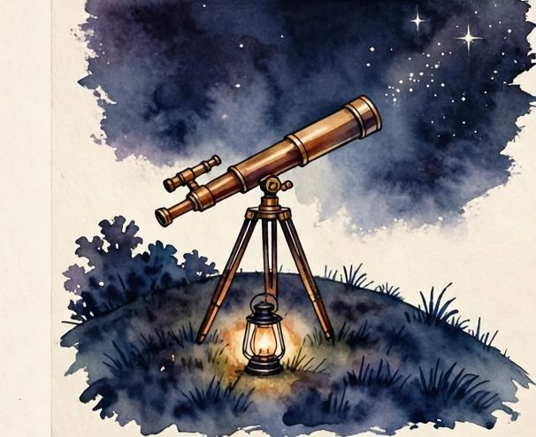
A camp chair set alone in a meadow at night, tipped back, aimed at nothing but the stars
The estate's whole practice can be reduced to a posture: looking up, inward. It is the same gesture the outer astronomers make, rotated half a turn. The citizen sits somewhere unremarkable — a step, a parked car, the far side of a long day — and directs attention at the interior sky with the unhurried respect one owes to anything larger than oneself. No equipment is required. A parked car at the edge of town has served more surveys than many a purpose-built observatory, the register notes with approval. The register notes that most surveys begin exactly this casually.
Technique, such as it is, consists of returning. One look inward reveals little beyond brightness and weather; the chart emerges across a hundred looks, the way a coastline emerges across a season of tides. The Keeper's advice to beginners is therefore embarrassingly plain: look more often, conclude less quickly. The sky does not perform for a single visit. The chart also corrects itself during these visits, quietly striking out coastlines that were drawn in a single dramatic night and never confirmed. It discloses itself to regulars — to the citizen who shows up on ordinary nights, when nothing in particular is shining.
Over years, the posture changes the person who holds it. To look up, inward, is to remember nightly that one is a place and not only a passage — that the traffic of a day crosses a sky that was there before it and continues after. Citizens who keep the habit tend to carry their weather more lightly. The sky, regularly regarded, becomes less like a rumour and more like a residence. Residence, unlike rumour, improves with every honest report filed from inside it. And a residence, the register observes, is a considerably better thing to live in.
11The Universe Is Not in a Hurry
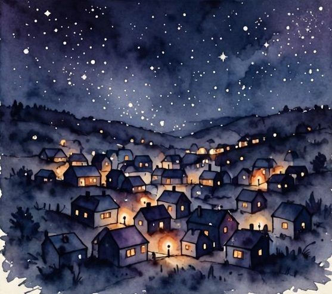
An ancient tortoise crossing an observatory garden path beneath a wheel of slow stars
Surveyors in a hurry make poor charts, and the inner universe is under no obligation to accommodate their schedule. Its processes run on the old timescales: a grief recedes like a tide, a talent consolidates like a reef, a change of heart completes its orbit in years rather than news cycles. The register's marginalia are full of citizens demanding to know why some inner season will not advance. Reefs, in the outer world, are raised by creatures who never see the reef; the inner kind is no more obliging to its builders. The Keeper's answer, in various phrasings, is that it is advancing — at the speed of skies.
This is not an excuse for neglect, and the desk distinguishes the two carefully. Neglect is failing to look; patience is looking regularly at something that changes slowly. The universe rewards the second and ignores the first. The desk distinguishes, in this connection, between the watched pot that never boils and the unwatched garden that goes to weed; the universe resembles the second, not the first. A star does not brighten because it is stared at angrily, but the citizen who keeps the nightly appointment will be the first to notice when it does brighten, and the first to be believed when they report it.
There is a steadiness available in this fact, if it is taken properly. The person who knows their universe is not in a hurry stops measuring inner progress against other people's weather reports. Their sky proceeds. Seasons that seem stalled are usually just long. The register closes the subject with its most-quoted entry, unattributed because everyone ends up writing it: nothing up there is late. Surveyors who internalise the timescales stop writing frantic marginalia and begin keeping the kind of log their grandchildren will be able to sail by. It is only the surveyor who arrived early with a stopwatch.
12A Sky Kept Private Is Still a Sky
Not every region of the inner universe is open to visitors, and the register defends this without embarrassment. A citizen may keep whole constellations unshared — not from shame, not from strategy, but because privacy is one of the legitimate climates of a sky. The Observatory Desk logs such regions as held, full stop. The modern world has opinions about doors left open; the estate has older ones, and keeps its own counsel and its own keys. It does not speculate about their contents, and it regards the urge to speculate as a failure of manners before it is anything else.
The modern temptation runs the other way: to treat the unshared as the unreal, as if an inner event required witnesses to be entered into evidence. The older astronomy of this estate knows better. The far side of the moon was entirely real during the millennia when no one had seen it. Entire artworks in the outer world were painted for one wall of one room, and the centuries have not thought the worse of them for it. Likewise a joy never announced, a sorrow never narrated, a thought kept its whole life in one person's keeping — these shine, or don't, on their own terms.
Privacy of this kind is not a wall; it is a door with the key kept on the inside, which is a different piece of architecture entirely. The citizen who keeps a private sky is not diminished by it, and neither is the sky. Some lights are for navigation and some are simply for the house. The Keeper has never once seen a private sky that was poorer for its privacy. The register's position, entered in ink, is final: a sky kept private is still a sky, entire and under no obligation to explain its acreage.
13Constellations of Memory
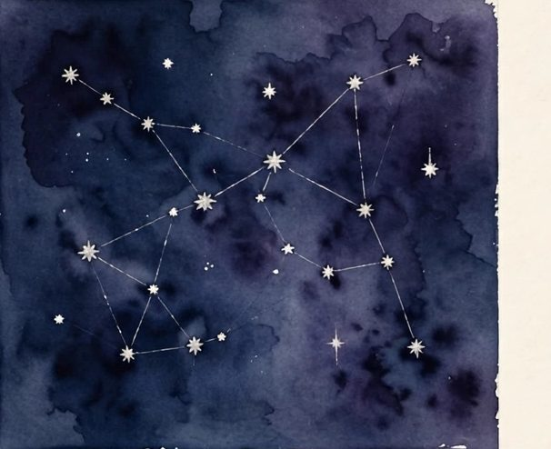
A parlour wall hung with framed star charts, each one drawn in a different hand
With this hall, the survey turns from the sky's scale to its memory, and the governing image changes. Memories, the register finds, are not stored like files in a cabinet. They shine like stars: some bright enough to steer by, most faint, all of them joined — by the remembering mind — into constellations. Ask them instead to point at the sky and say what the figures are called, and the disagreement begins before the first star is named. No two citizens draw the same figures from the same sky, which is why two people can attend one childhood and bring back different countries.
A constellation is a pattern laid over points of light; the stars are real and the lines are ours. This dual nature is the whole subject of the hall. The bright points — the actual events, however they have dimmed or sharpened with time — belong to the past. The connecting lines, which decide what the events mean together, belong to the present and are redrawn more often than anyone admits. The past, consulted on the matter, declines to arbitrate; it merely supplies the points and withdraws with dignity. Memory is thus part astronomy, part authorship.
The Keeper's instruction for this hall is posted at its entrance: handle the lines with more suspicion than the stars. Citizens grieve over lines as if they were astronomy — this happened, therefore it means that — when the therefore was drawn by a younger surveyor, in a darker year, with a shorter ruler. The stars rarely object to being reconnected. Citizens leave the hall quieter than they entered it, which the Keeper counts the hall's most reliable result. It is one of the few revisions the sky permits without a fee, and this hall exists to encourage it.
14The Bright Stars Are Not the Whole Sky
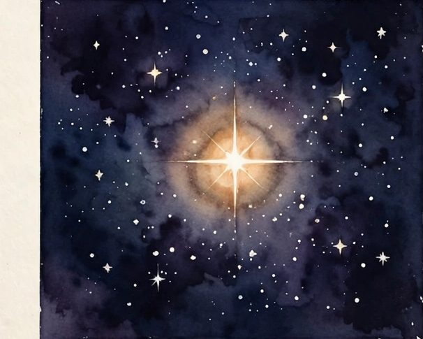
A telescope aimed at one brilliant star while the rest of the heavens wait, unregarded, around it
Every life has its bright stars: the half-dozen memories so luminous that they seem, in recollection, to be the whole story. The wedding, the catastrophe, the triumph, the day everything changed. Surveyors naturally aim the instrument at these. The register does not object — bright stars are genuine stars. It is the same error as describing a country by its capital, its catastrophe, and its coronation, and calling the description a geography. It objects only to the conclusion beginners draw from them: that the biography has been seen because its highlights have been visited.
The evidence against that conclusion fills the rest of the chart. For every bright star there are hundreds of faint ones — ordinary Tuesdays, unphotographed kindnesses, long plain stretches of competence — and it is these, in aggregate, that constitute most of a life's actual light. A sky described only by its brightest points would be unrecognisable to the person who lived under it. The register's shelves groan under the weight of these unlegendary years, faithfully kept, and they are the first volumes the Keeper reaches for. The biography is in the faint majority, quietly outnumbering the famous events.
There is a practical mercy in learning this. Citizens who feel their story is thin are usually comparing their whole sky against somebody else's bright stars. The desk's remedy is a longer look at their own faint register: the years that produced no legend and were nonetheless lived at full wattage. It is entered so often, in fact, that the newest Keepers are taught it before they are taught the filing system. The bright stars are not the whole sky — a sentence the Keeper enters in the margin of nearly every survey, because nearly every surveyor needs to read it twice.
15Patterns We Drew Between the Stars
Between the fixed points of memory, the mind draws lines, and the lines are pure invention — necessary invention, but invention all the same. Because the father was distant in one bright scene, the line is drawn through all of them, and the constellation reads a cold man. Because one failure coincided with one season, the line joins them into a law. The register does not laugh at these drawings; it has seen the same lines, give or take a star, in nearly every file it keeps. The register calls these drawings patterns, and records them in pencil, however confidently the citizen has inked them in.
Patterns are not lies. They are the mind's way of making a sky navigable, and a sky without any pattern would be unnavigable noise — ten thousand unconnected points, no figures to steer by. The hall's position is therefore moderate: the lines are tools, to be kept where they serve and revised where they have quietly become cages. Even the astronomers of the outer sky concede the point, having named their own figures after bears and hunters that no telescope has ever located up there. A pattern drawn at nine to explain a household should not be governing the household's descendant at fifty without at least a review.
The review, when citizens undertake it, is rarely dramatic. They simply hold the old line up against the full set of stars — including the faint ones the original drawing ignored — and find that a different figure fits better: not the cold man but the tired one; not the accursed season but the underfunded one. The stars have not moved. The constellation improves. The new drawing is then tested the only way drawings can be: by steering through a hard season with it. It is the closest thing to editing the past that the estate permits, and it turns out to be considerable.
The Observatory Desk
One desk receives all correspondence for this universe — questions, corrections, greetings, and word of skies you are learning to read. It is read in the order it arrives.
16The Story the Constellation Tells
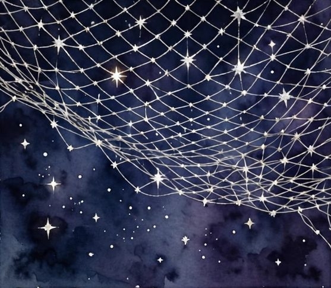
A grandmother pointing out figures in the night sky to no one in particular, telling the old tales to the dark
Once drawn, a constellation begins to tell a story, and the story — not the stars — is what a citizen actually lives by. The same set of memories, connected one way, tells a tale of survival against odds; connected another, a tale of luck never earned; a third arrangement yields a cautionary fable with the citizen cast as its warning. The files are not considered contradictory; the desk shelves them together, like successive editions of one honest book. The Observatory Desk keeps all three versions in many files, because most people, over a lifetime, believe each of them in rotation.
The register's interest is in who is holding the pencil when the story changes. Sometimes it is time: distance dims some stars and the old figure will no longer close, so a new one forms almost without permission. Sometimes it is another person — a friend, a partner, a stranger on a train — who points at the same sky and says, quite casually, that grouping looks like a harbour, actually. Entire friendships in the register began exactly so, with a harbour somebody mentioned in passing. The citizen goes home and cannot unsee the harbour.
What the hall asks is only that the authorship be noticed. A story that knows it is a story can be revised with dignity; a story mistaken for astronomy can only be obeyed or smashed. The Keeper lists the mature surveyor's skill plainly in the register: to hold the constellation firmly enough to steer by, and lightly enough to redraw. The stars, indifferent and patient, will outlast every version. They can afford to. The Keeper enters this skill in the register under seamanship, since it is precisely the art of the sailor: trust the chart, and keep the pencil sharp. They are the only party in the arrangement that is not in a hurry.
17Memories That Guide Like Pole Stars
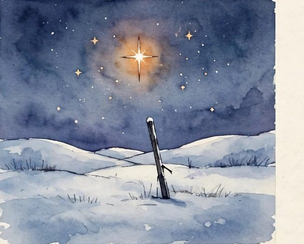
A night harbour, one steady light on the headland that every boat in the roads is quietly using
A very few memories achieve the status of pole stars: fixed points by which the citizen takes their bearings in the dark. A parent's sentence, delivered once and used ten thousand times. A moment of being rescued, or of rescuing, that defines what rescue means ever after. These memories are not necessarily the brightest or the happiest. They are the most consulted. Sailors of the outer world chose theirs the same way, not for brilliance but for the one light that could be found again on any clear night. Their light is less important than their position — they stay where they were put, and everything else can be located from them.
The register treats pole stars with a certain ceremony, because so much depends on their accuracy. A misremembered guiding memory is a compass error that compounds with every mile steered by it; citizens have crossed decades on a sentence that was never quite said. The desk keeps a small ceremony for verified pole stars too: nothing is said, but the entry is underlined, once, in the Keeper's best ink. The desk therefore recommends, now and then, the awkward and valuable work of checking the pole star against other records — siblings, letters, the testimony of fellow witnesses — not to dim it, but to set it true.
When a pole star is verified, something in the whole sky relaxes. The citizen can steer hard by it, in bad weather, without the background hum of doubt. And when one is found false and replaced, the register logs no disgrace — only a correction, entered like any correction in any honest log. The night does not require that we were never wrong about the sky. Corrections entered without shame are the surest sign, in this estate, that the survey is being run by an adult. It requires that we keep checking which light we are actually following, and follow it on purpose.
18Faint Stars, Kept Anyway
The survey now reaches the faint stars: the memories with almost no light left in them, kept anyway. The smell of a particular stairwell. A teacher's handwriting on one surviving page. The exact quality of afternoon in a house that no longer exists. These cannot be steered by and would not survive cross-examination. The Keeper's handwriting, elsewhere brisk to the point of illegibility, slows noticeably in these entries, as if the pen itself understood the assignment. They are in the register nonetheless, in the Keeper's most careful hand, because the estate holds that brightness is a poor criterion for keeping.
Faint stars do work that bright ones cannot. They carry texture — the grain of a life as it was actually lived, day by ordinary day. A biography assembled only from bright events reads like a monument; the faint stars are what make it read like a place somebody lived. Citizens revisiting their charts in later years often find the faint entries moving out of all proportion to their wattage. The stairwell outshines the ceremony. Ask a citizen at eighty for their biography and it is the faint stars that arrive first, ahead of all the ceremonies, asking to be told. It happens constantly, and the desk has stopped being surprised.
Keeping them requires a small deliberate policy, since faint stars are the first casualties of a busy survey. The policy is simply to record before the light is entirely gone: to write the stairwell down, to say the handwriting aloud to someone, to let the memory be witnessed once while it can still be pointed at. One witnessed telling, entered in one other person's sky, is usually enough to keep a faint star lit for another generation. A universe is kept the way a garden is kept — not by admiring its brightest flower, but by refusing to let the dim corners go entirely unvisited.
19The Constellation That Was Never There
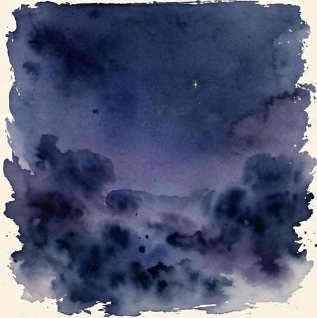
An antique chart showing a grand figure in the southern sky that no living sailor has ever found
Every long survey eventually discovers one: a constellation in perfect order, confidently charted, that was never there. The family myth everyone organised their behaviour around, which turns out to rest on one remark at one funeral. The supposed judgment of a whole town, which was actually two people. The register keeps a shelf of these retired figures, and it does not mock them. Some of these figures governed marriages, migrations, and the naming of children, all on the authority of a remark nobody quite remembered making. A constellation that was never there can still steer a life for fifty years, which makes it among the most consequential objects in the sky.
Discovery usually arrives as a small administrative shock. The citizen checks a star that anchored the pattern and finds it missing, or doubled, or belonging to an entirely different figure. What collapses is not the past — the past, being mostly faint stars and honest distances, survives inspection. What collapses is the line-work: the meaning assembled on top. There is usually one witness who knew all along, and whose silence on the subject is recorded in the register without comment. There is often grief in it, and beneath the grief, arriving like weather clearing, a distinct and embarrassing relief.
The desk's counsel for this discovery is unhurried. Do not immediately draw a replacement figure across the same stars; an unpatterned stretch of sky can be lived under quite comfortably while the evidence settles. The stars that were conscripted into the false constellation return, one by one, to being merely themselves — a remark, a season, two people — which is a smaller and more governable universe of facts. What was never there cannot be lost. It can only be retired, and retirement, in the register's long view, is a form of promotion for the truth.
20Redrawing the Lines
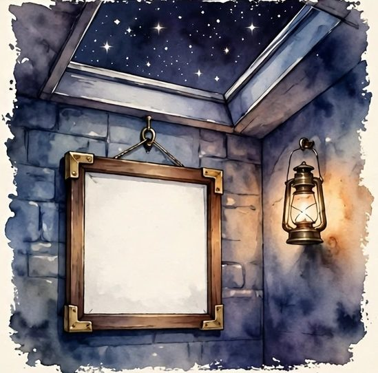
A chart table at midnight, an old map weighted at the corners, fresh lines being drawn in lighter ink
The hall of memory closes with its practical ceremony: the redrawing of the lines. It is not a dramatic rite. The citizen sits with the chart — the actual record of a life, bright stars, faint stars, retired constellations and all — and, in the light of everything the survey has since established, draws the figures again. Some lines survive intact. Some move by a star or two, which changes the story out of recognition. Old charts are not burned at these sessions; they are filed beneath the new one, where their errors remain available for instruction. A few are erased altogether, and the sky is better for the erasure.
The Keeper supervises these sessions with notable restraint. Redrawing is not revision for comfort; a line moved merely to flatter the surveyor will not hold, and the register can tell — such figures collapse at the first bad weather. The lines that hold are the ones drawn through all the evidence, including the faint stars and the distances. Honesty is not the enemy of a kinder constellation. The Keeper unlocks the good paper for the purpose, on the grounds that a chart meant to be steered by should not be drawn on scrap. It is the only known method of producing one that lasts past the season in which it was drawn.
When the work is done, the chart is not finished — no chart in this estate is ever finished — but it is current, which is the achievable virtue. The citizen rolls it up and returns to living under the actual sky, which the chart only ever described. The register's closing entry for the hall is brief enough to be memorised: the stars were never the argument. The lines were. It is the closest thing to a benediction the Observatory Desk permits itself, and it is entered in the register in ink, not pencil. And the lines, thank heaven, are ours to draw again.
21A New Star Sworn In
Occasionally, and without asking permission of the existing chart, a genuinely new star is sworn in. Not a redrawn line, not an old light reclassified — an addition. A person met late who rearranges the furniture of the sky. A country, a craft, a child, a conviction arrived at the hard way. The gold ink is kept for nothing else, and the jar is small, because the desk is superstitious about extravagance in exactly one direction. The Observatory Desk has a short ceremony for these admissions, because the register has learned that unceremonied arrivals are the ones citizens fail to notice for years, steering by an out-of-date chart.
The ceremony is mostly bookkeeping: the new star is entered in gold ink, its position described relative to the old fixed points, and — this is the part surveyors resist — the neighbouring constellations are redrawn on the spot. A new light changes what the nearby figures are. Surveyors who skip the ceremony spend years steering around a star they have not admitted is there, which is harder work than the admission. The marriage redraws friendship; the vocation redraws the family pattern; the loss, too, is a new star of the dark variety, and it redraws everything adjacent to it whether the citizen attends the ceremony or not.
What the hall wishes to establish is simply that the sky is not a closed collection. Citizens in their middle decades sometimes speak of their inner universe in the past tense, as if the admissions office had shut. The register's ledgers say otherwise, in gold ink, in every decade of life it has on file. Stars are sworn in at seventy. The dome is never finished being built. The only requirement is the citizen's presence at the ceremony — which is to say, their willingness to notice that the sky has changed.
22Starlight Is Old Light
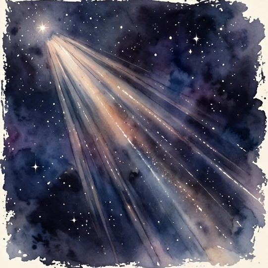
A traveller reading a letter by lamplight, the envelope postmarked years ago in a hand long still
Astronomers of the outer sky accept a strange fact without flinching: starlight is old light. What reaches the eye tonight left its source years ago; to look up is to look into the past, unavoidably, at every point. The register finds the inner sky behaves identically. The memories by which a citizen steers were emitted by earlier versions of that citizen, in earlier weather, and have been travelling ever since. Every act of remembering is therefore a small act of time travel, performed nightly, without machinery, by citizens who would deny being capable of it. The person consulting the chart tonight is always reading dispatches from someone they used to be.
This is not a defect of the system. Old light is still light — often the steadiest available — and a survey conducted without it would have almost nothing to work with. But the age of the light deserves a line in the log. A conviction formed at nineteen arrives at forty carrying nineteen's weather inside it: its urgencies, its shortages, its particular darkness. To know the age of one's guiding lights is not to distrust them. It is to correct for their journey, the way a navigator corrects for the years a star has wandered.
Citizens who grasp this stop being embarrassed by the lag in their own sky. Of course the present is lit partly by the past; there is no other lighting on offer. The practical question is only whether the old light is being received with its date attached. A universe read with dates is a history. A universe read without them is a rumour. Two citizens may share a star and read it by different centuries; the desk's only ruling is that the date be admitted before the argument begins. The register keeps the dates, drily, in the margin, and regards the margin as among the most illuminating parts of the page.
23The Whole Sky Remembers Differently
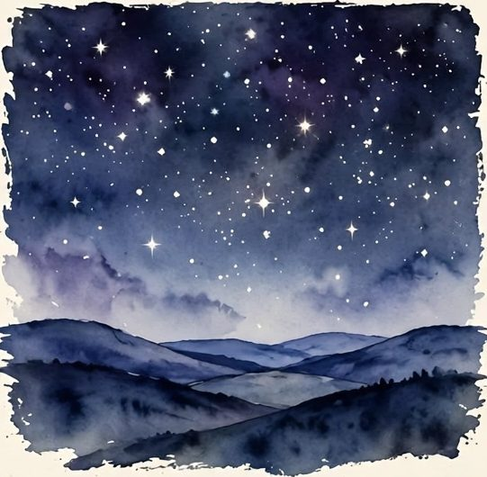
Three surveyors at one table with three charts of the same coastline, no two coastlines agreeing
Bring three witnesses of one event to the Observatory Desk and the desk will produce, with complete reliability, three skies. The whole sky remembers differently in every citizen who stood under it. This is not because two of the witnesses are lying and one is equipped with the truth. It is because memory is a constellation-making instrument, and each instrument draws its lines through the emphases of a different life. The stars are shared. The desk, which has arbitrated these disputes for generations, no longer even reaches for the stamp that says resolved. The figures never are.
Families discover this at reunions, over the mildest possible questions — the size of a house, the temper of a holiday — and are briefly scandalised, as if the disagreement itself were the scandal. The register is unmoved. It has shelved, side by side, the charts of siblings who shared a roof for eighteen years and plainly inhabited different universes, and it files the discrepancy under astronomy, not under bad faith. A roof, it turns out, is a geographical feature, not an epistemological one. The same sky, differently surveyed: this is the normal condition of the species.
The mature response, which the Keeper recommends in the driest possible terms, is curiosity before correction. Another person's chart of the shared sky is data about their universe, and frequently the only data of that quality one will ever be offered. To argue them out of their constellation is possible but rarely profitable. To ask how the lines got drawn — that is a conversation. The register notes that most lifelong estrangements are, at bottom, two charts and no conversation, while most reconciliations begin the moment somebody says: show me your sky.
24What the Night Keeps Catalogued
The hall of memory ends in the cellar, where the Observatory Desk keeps what the night has catalogued and the day has no use for: the unfiled, the half-remembered, the dreams that survived until breakfast and no further. Citizens are sometimes dismayed at the size of this archive. They had imagined memory as a gallery of the significant. It is, in fact, a warehouse of everything, curated by nobody, in which a bus ticket from a decade ago lies filed beside the face of the beloved, both in the same handwriting.
The catalogue's apparent disorder conceals a working principle the Keeper is fond of: the night keeps what the day was too busy to evaluate. Trivia is retained because retention is cheap and judgment is expensive, and the archive declines to judge in advance what a future surveyor might need. The bus ticket, produced at the right moment thirty years on, can unlock an entire constellated region that the official highlights had lost. The Keeper, asked whether the cellar is not a fire risk, replies that forgetting would be the greater one. The desk has seen it happen too often to permit any spring-cleaning of the cellars.
So the hall closes with a defense of the uncurated. A citizen's memory is not a reputation to be managed but a sky to be surveyed, cellars included. Nothing down there requires a response; the catalogue asks only to be acknowledged as existing. When the surveyor finally descends and walks the shelves without flinching at the dust, the register enters the visit in its calmest hand: archive inspected; all of it theirs. Dust, in the cellar's defense, is only what the years look like before they are consulted. The night, satisfied, goes on keeping everything.
25Inner Weather
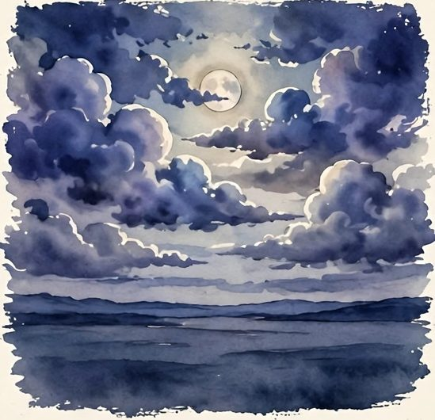
A brass weather station on the observatory porch, its dials all quietly disagreeing with each other
The survey now turns from the sky's fixed features to its most changeable one: inner weather. Mood, energy, clarity, the pressure systems of hope and discouragement — these move across the inner universe the way weather moves across a county, locally, temporarily, and with complete indifference to the calendar's opinion. The instruments themselves are unglamorous — a thermometer of energy, a gauge of patience, a glass for the clarity of thought — and every citizen reads them in a private unit. The Observatory Desk maintains a weather station for every citizen in its care, and its instruments are read daily, precisely because their readings expire so quickly.
The first lesson of the station is that weather is real without being permanent. A low front over a life is a genuine meteorological fact; it rains, and the rain is not imaginary, and the citizen is wet. The register insists on recording this accurately, because the second lesson depends on it: fronts move. What is true of Tuesday's sky is data about Tuesday. Citizens get into difficulty when they file a weather report as a change in the coastline — when one grey week is promoted, in the log, to a permanent feature of the terrain.
The hall that follows will take the weather piece by piece: fronts, rain, storms, fog, the first clear morning. Its doctrine, stated here at the door, is the desk's oldest: weather is described, never argued with, and never obeyed as if it were climate. One does not curse a front for arriving or credit oneself for its departure. One notes the pressure, dresses accordingly, and keeps the instruments clean. The sky, in this estate, is allowed its weathers. The Keeper reads the station's instruments aloud each morning to no one in particular, on the theory that weather announced is weather half governed. So is the citizen.
26A Mood Is a Front, Not a Climate
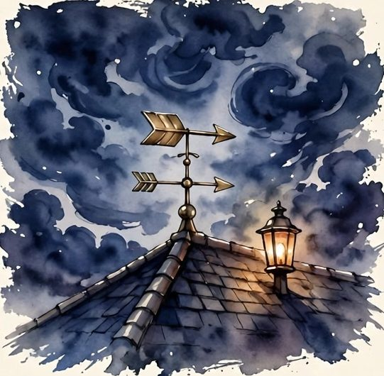
A band of rain crossing a valley in sunshine, one field dark and wet, the next field gold
Of all the entries in the weather log, this one is requested most often, and the Keeper obliges: a mood is a front, not a climate. A front is a travelling boundary — it has a leading edge, a duration, and a departure already scheduled by forces larger than the person standing in it. A climate is the average of decades. Confusing the two is the commonest forecasting error in the inner universe, and it is almost always made in the same direction: a passing front, misread at its wettest hour as the permanent condition of the sky.
The evidence for the distinction is available to any citizen willing to keep records. The despair of one March, consulted in the following March, reads as weather — intense, total while it lasted, and gone. The register does not use this to mock the March self, whose rain was entirely real. It uses it to issue a standing instruction to future March selves, in the past self's own handwriting if possible: this is a front. It has rained like this before. The valley has been gold on both sides of every band of rain on file.
None of this shortens a front by a single hour, and the desk does not pretend otherwise. What it shortens is the paperwork — the life decisions drafted mid-front, in the belief that the climate had changed. The estate's rule is posted at the weather station and has saved more citizens than any other sentence in the hall: make no permanent entries in the register during weather. Wait for the front to pass, then write. The rule is not mercy toward the front; it is respect for the clerk who will have to live with the entry. The handwriting will be better, and so will the entries.
27The Barometer I Carry
Every citizen carries a barometer, whether they consult it or not: some interior instrument that registers pressure before the weather arrives. For one person it is sleep, thinning at the edges days before a low settles in. For another it is temper, or appetite, or the sudden conviction that an ordinary email is hostile. The Keeper's own barometer is widely understood to be a knee, about which the desk maintains a dignified silence. The Observatory Desk does not issue these instruments; it merely urges each surveyor to discover which one they were issued, and to learn its particular dialect of warning.
A barometer is of no use in a drawer. The skill the hall teaches is calendrical: to check the instrument at the small signs, while the front is still offshore and the preparations are still cheap. The citizen who knows their needle can do the modest, unfashionable things early — rest before the debt is called in, postpone the difficult conversation by one honest day, decline the expedition. None of this appears in the official biography. All of it is why the official biography went as well as it did.
There is also the matter of false readings, and the register is candid about them. A barometer carried through a fright will point at storms for a season afterwards; the needle learns the last weather too well. Calibration, in this estate, is a social art: the needle is checked against the observations of trusted fellow surveyors, who can often see one's sky more plainly than one can. The instrument remains one's own. Its readings improve in company. A well-kept barometer, the Keeper notes, is the difference between being surprised by one's weather and merely being visited by it.
28Rain That Waters Something
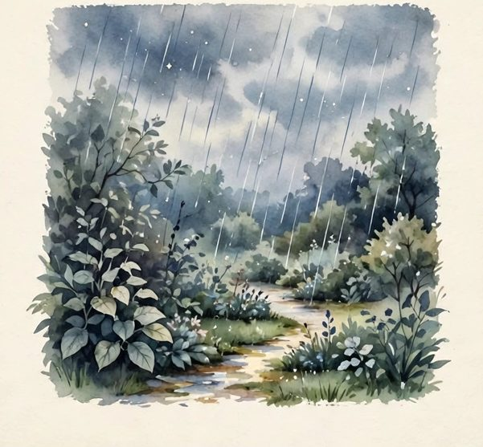
Rain falling steadily on a walled garden, the soil darkening, the gardener watching from the doorway without complaint
Not all inner rain is an interruption. The weather log contains a category the desk marks with a green pencil: rain that waters something. The low, grey, unproductive-seeming spells — the weeks of low spirits in which nothing shines and little is accomplished — are, on later inspection, frequently the exact conditions under which some underground part of the life was quietly germinating. The citizen reports a wasted season. The green pencil is not a decoration; it is a ruling, entered against the citizen's own first account of the season. The register, consulting the following year's chart, enters a correction: season of watering.
This is not the desk's attempt to put a cheerful face on sorrow, and it should not be mistaken for one. Rain is wet; the low weeks are genuinely low, and the estate does not grade citizens on their attitude toward being rained on. The point is narrower and more durable: the inner universe runs an agriculture as well as an astronomy, and agriculture is not impressed by sunshine alone. Roots do their famous work in the dark and the damp, unphotographed, at exactly the times the surveyor is apologising for the weather.
The practical consequence is a change in bookkeeping rather than a change in feeling. When the rain comes, the citizen who keeps this category open asks one additional question of the season: what might this be watering? Often there is no answer at the time, and the register accepts a blank. The answer is filed later, by the harvest. A sky that knows its rain has employment is a sky that can be rained on with a certain professional calm — not enjoyed, not welcomed, but recognised as part of the estate's economy.
29The Storm That Passes Through
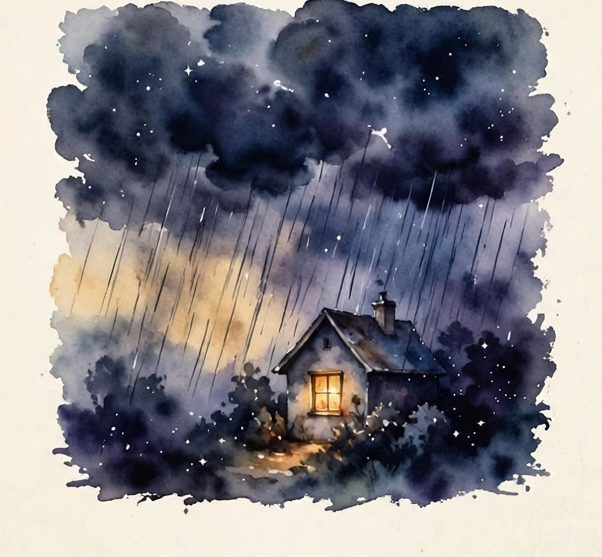
A great storm rolling over the observatory hill, trees bent, the dome shut fast and riding it out
Then there is the storm proper: the inner weather that does not water but batters — grief at full strength, fury, the season of bad news arriving in convoys. The register's storm protocol is the oldest page in the weather log, and it is notably free of advice about preventing the storm. Storms of a certain size are not preventable from inside the sky they are crossing. The protocol concerns itself with the only two questions that matter during one: what must be secured, and what must simply be ridden out.
Securing, in a life, is unglamorous and specific. The dome is shut; which is to say, the citizen reduces the surface the weather can strike — postpones, cancels, simplifies, asks for the help that pride usually declines. The register is blunt that this is seamanship, not surrender. No vessel is criticised for shortening sail. Ropes, tarpaulins, and the honesty to say the roof is leaking — the desk's list of storm equipment is short because storms are not the time for shopping. The criticism, where the desk offers any, is reserved for those who kept every stitch of canvas flying to prove something to the storm, which was not watching and would not have been persuaded.
And storms — the log insists on this in entry after entry, across every citizen it has ever served — pass through. They are weather, not relocation. The sky they cross is the same sky afterwards, minus some branches, with its stars entirely unharmed behind the cleared air. The surveyor who has ridden out one storm properly logged is a measurably calmer citizen in the next one. Not because the wind is weaker. Because the logbook now contains, in their own hand, the only sentence that matters in a gale: this, too, was weather, and it went.
30Still Air, Honest Air
Between the fronts there comes, in every inner universe, a spell of still air: no wind of enthusiasm, no pressure of dread, the sky neither brilliant nor grey but simply, levelly itself. Citizens misread these spells constantly. The recently storm-tossed think the stillness is emptiness; the ambitious think it is stagnation; nearly everyone, at first, tries to stir it. The Observatory Desk defends still air as it defends few other weathers. It is the weather of the surveyor's holiday, and like all holidays it is most useful to those who do not attempt to live in it permanently. It is the sky at rest, and rest, in a universe, is a load-bearing condition.
Still air has a particular honesty that moving weather cannot match. Without a front to blame or a following wind to credit, the citizen meets their own sky undiluted: the actual state of the constellations, the real distance of the horizons, the unassisted sound of their own machinery. The register therefore treats still spells as survey weather — the best conditions of the year for taking bearings. Bearings taken in anger, by contrast, are struck from the log on sight. More charts are corrected in still air than in any gale, and the corrections last longer, being made without haste or flinching.
The hall's counsel is to let the stillness be still. It will move again on its own schedule; inner air does not pool forever. The citizen who can sit in an unmoving sky without manufacturing wind — neither crisis nor carnival — has learned something the desk considers close to the whole art. Not every hour must be weather with a name. Some hours are just the universe, breathing evenly, in no need of improvement. The still spell is entered in the register without flourish, which is the desk's way of giving it a medal. Honest air, the register calls it, and files it under the good conditions.
The Observatory Desk
One desk receives all correspondence for this universe — questions, corrections, greetings, and word of skies you are learning to read. It is read in the order it arrives.
31Fog, and Waiting in It
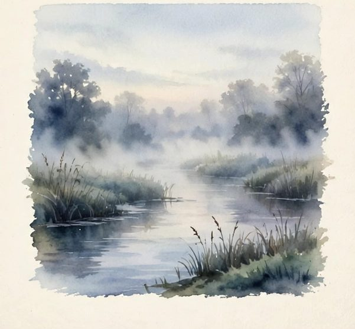
A familiar lane in thick morning fog, the gateposts visible, everything beyond them politely withheld
Fog is the inner weather citizens like least, and the register suspects this is because fog cannot be dramatised, only endured. A storm at least has a plot. Fog has none — only the withdrawal of the view, the shortening of the world to the nearest gatepost, the impossibility of seeing the road one is nevertheless standing on. In fog, a life cannot be surveyed. Decisions that require distance cannot honestly be made. Roads do not cease to exist in fog; they merely cease to be available for inspection, which is a different and more bearable statement of the problem. The weather log's entire entry for such days is two words long: wait, carefully.
Waiting in fog is an active discipline, though it looks like nothing from outside. The fogged citizen's work is to maintain position without inventing landmarks: to refrain from redrawing the chart simply because the chart cannot currently be checked against the sky. More constellations are falsified in fog than in any other weather — lines drawn toward lights that were never there, horrors sketched into blank white distance. The fogged citizen is permitted tea, routine, and the company of people whose own charts are settled; expeditions are struck from the day's orders without appeal. The desk's counsel is uninspiring and absolute: in fog, the pencil stays in the pocket.
The compensation, logged by every surveyor who has kept the discipline, is the quality of the lifting. Fog rarely thins gradually in memory; it is simply, one morning, gone, and the whole familiar coastline stands there restored, preposterously detailed, as if it had never been away. The citizen learns two things from each fog: that the world persists unobserved, and that their panic about its disappearance was weather too. The register files the lesson where it will be found next time — at the front of the log, in large hand, under F.
32The First Clear Morning
Dawn after rain, the observatory steps washed bright, every star gone and the whole valley visible instead
After any long weather, the inner universe produces its signature event: the first clear morning. The citizen wakes to find the pressure lifted, the distances restored, colours returned to their full strength like instruments brought back into tune. Breakfast is eaten with disproportionate gratitude. The register records these mornings without analysis, because analysis is not what they are for. Even the Keeper, who has logged several thousand such mornings, is observed to take coffee on the steps on these days, which is the desk's equivalent of a holiday. They are the sky's proof, delivered in person, that the survey's worst readings were local and temporary all along.
What distinguishes the clear morning from mere cheerfulness is its accuracy. The problems have not all dissolved; they have resumed their true sizes. The task that loomed at storm-scale stands revealed as a fortnight's ordinary work. The relationship feared ruined reads as weathered. Clear air does not lie in the citizen's favour — it simply stops exaggerating in the other direction, and the relief citizens feel is largely the relief of correct measurement. The desk trusts decisions made on first clear mornings more than decisions made in any other inner weather.
There is also, the Keeper notes, a brief and precious extravagance to these mornings: everything seems possible, in the way that everything seems impossible in the fog. The wise surveyor enjoys the extravagance without filing it. By the second clear morning the sky has settled to its honest average, and the citizen can begin the ordinary work of the good season. The register's closing marginalium for this entry is much quoted and never improved upon: clarity is also weather. Enjoy it as such, and do the durable things while it lasts.
33The Climate I Keep at Home
Weather is what passes; climate is what a citizen keeps. The hall now draws the distinction in its most practical form: the climate kept at home — the standing conditions of the inner universe in its domestic province, the average sky under which the household of the self actually lives. A person may endure dramatic weather for decades and keep, underneath it, a mild and forgiving home climate; another, blessed with gentle weather, maintains indoors a permanent drizzle of self-reproach. The register's interest is in the second figure, because climate, unlike weather, is partly a matter of keeping.
Home climate is set by slow instruments: the tone of the inner voice at breakfast, the default interpretation of other people's silences, the thermostat of expectation kept for oneself and one's people. None of these appear on any single day's weather report. All of them determine what the years felt like from inside. Citizens who set out to improve their lives by chasing better weather usually fail in an instructive way; citizens who adjust the home climate by a degree or two find the weather itself begins, mysteriously, to report differently.
The desk does not overstate the citizen's control — some climates are inherited with the house, and geology is geology. But a degree or two is nearly always within the keeper's authority: a kinder default, a warmer lamp kept lit in the main room of the mind. The register's testimony, across its whole archive, is that nobody who made the adjustment called it small afterwards. Climates are not changed by decree. They are changed by keeping, daily, at the level of the thermostat — and the keeping, thank heaven, is a learnable trade.
34Seasons Are Not Weather
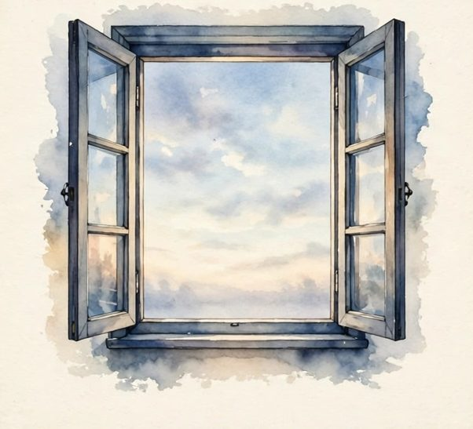
Four small sketches of one hill pinned in a row above the desk, the hill unrecognisable from one to the next
If a mood is a front and a climate is decades, between them stand the seasons — and the register finds that citizens confuse seasons with weather almost as often as they confuse fronts with climates. A season of life is a long arrangement: the child-rearing years, the building years, the years of caring for the old, the fallow years after. Within any season, weather varies wildly. Judging the season by one week's sky is the error this entry exists to prevent, and it is an error with real costs, since seasons misjudged get abandoned mid-term.
A season has its own proper work, which the weather either assists or merely interrupts. Spring seasons plant; autumn seasons gather and store; the inner winter, most misjudged of all, is for the deep root work that no other season permits. The citizen who demands summer productivity from a winter season is not ambitious but illiterate — reading the wrong page of the almanac with great determination. The almanac is the least consulted book in the observatory and the one the Keeper would save first from a fire. The Observatory Desk keeps almanacs precisely so that effort can be matched to the season it is actually in.
Recognition usually arrives late and then all at once: oh — this is a winter; the low light is not a personal failure but a latitude. The register has watched this recognition relieve more citizens than any encouragement in its possession, because it converts shame into scheduling. Seasons are not weather: they are longer, kinder in their logic, and never once the citizen's fault. And like weather — the entry ends with the hall's refrain, now enlarged — seasons, too, are not permanent. The register has never known a citizen harmed by being told, accurately and in time, which season they were in. They are only, properly, inhabited.
35Dressing for the Inner Season
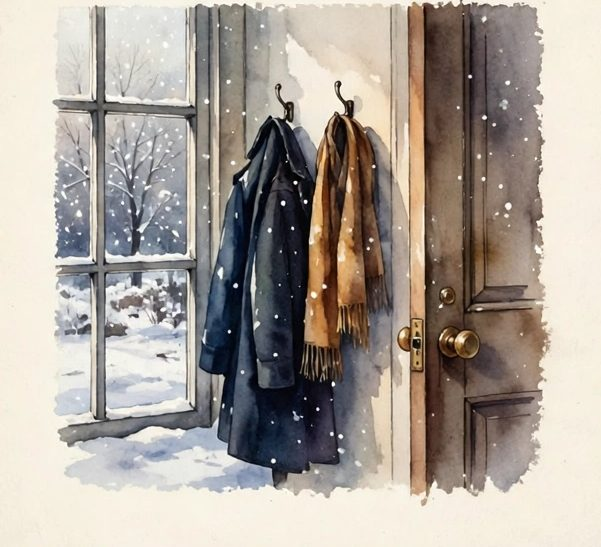
A coat stand by the observatory door hung with one garment for every kind of sky, all of them worn soft with use
The practical citizen, having identified the season, asks the practical question: what does one wear for it? The register approves of the question, which has saved more surveys than any profundity in the hall. The question also has the virtue of being answerable, unlike most of the questions citizens bring to the weather station. Dressing for the inner season means fitting the day's demands to the sky's actual conditions — taking the lighter duties in the low season without apology, saving the expeditions for the clear months, and refusing, on principle, to schedule a polar crossing during one's own winter solstice, however impressive it would look in the log.
This is not indulgence, and the desk draws the line sharply. The polar explorer dresses more carefully than anyone, not less; preparation is the opposite of avoidance. To dress for the season is to acknowledge the real temperature and then go out in it properly equipped — with margin, with provisions, with the day's ambitions cut to the cloth the sky is actually offering. The citizens who come to grief in the weather log are rarely the cautious. They are the ones photographed, year after year, attempting January in the clothing of July.
There is a wardrobe wisdom that accumulates across a life, and the register watches it accumulate with satisfaction: the citizen learns their own seasons' true lengths, keeps the right garments repaired, stops envying other latitudes their easier skies. Dressed properly, almost any season is workable; dressed defiantly, the mildest one is a hardship. The hall's whole meteorology reduces, in the end, to this courtesy toward oneself. Check the sky. Dress for the sky that is there. The expedition proceeds — at the pace the season sets, which turns out, decade after decade, to have been fast enough.
36Every Climate Has Its Use
The weather hall closes with its most even-handed entry. Citizens arrive at the Observatory Desk, in the main, wishing to exchange their climate for somebody else's — the steady one envying the vivid, the vivid envying the steady, both parties certain the other's sky is the habitable one. The register's ruling, after long observation of both, is that every climate has its use, and that the uses are not interchangeable. The wish is understandable, and the desk honours it by taking it seriously enough to decline it. The universe did not standardise its skies because the work of lives is not standardised either.
The dramatic climate produces its famous crops: intensity, appetite, the great storms of making and loving that milder skies cannot raise. Its costs are real and itemised in the log. The quiet climate produces crops no less necessary — endurance, fine observation, the long projects that require decades of unremarkable Tuesdays — and its costs are also real, and also itemised. What the desk refuses to file is a ranking. It has read too many surveys from both skies, each survey containing achievements the other sky could not have grown and sorrows it would not have survived.
So the hall ends not with a prescription but with a transfer of title. The climate one has is the climate one's life is built in, and building in it — rather than in the perpetual imagined renovation of it — is the whole of the art the desk can teach. Weather passes; seasons turn; the climate, tended, becomes a homeland. The Keeper closes the weather log with an entry copied from its first page, where the founder left it: there is no sky on file here that nothing could grow in.
37What Pulls at Me
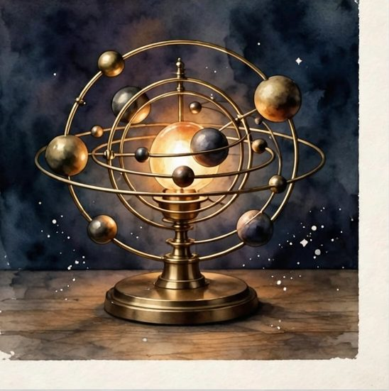
A small boat at anchor in a night harbour, its line drawn taut by an invisible and patient tide
With this hall the survey leaves the sky's weather for its deepest mechanic: the pull. Every inner universe is governed by attractions — forces that bend a life's course the way gravity bends a comet's — and the citizen's biography, read honestly, is less a list of decisions than a map of what pulled and what was obeyed. The Observatory Desk opens this hall with a question it considers the most useful in the entire register: what pulls at me? Not what should pull, not what pulled once. What pulls, tonight, measurably, in the actual dark.
The question repays precision. The pulls on a life are rarely the official ones. Ambition is announced; but the tide actually moving the boat may be loyalty to one person, or an old promise, or the wish to be thought easy to love, or a house in a particular light remembered from childhood. These subterranean gravities are not shameful — most of them are honourable — but they are unexamined at the citizen's peril. A chart of the actual pulls, the Keeper observes, is the first document in the file that no citizen has ever called flattering, and the first that none has ever called useless. A force one cannot name is a force one cannot negotiate with, only obey.
The desk's method is passive before it is active: observe the orbit before theorising about it. Where does the citizen actually return, monthly and yearly? Toward what do the thoughts swing in still air? The answers, entered over a season, draw the true chart of the pulls — often to the citizen's astonishment, always to their advantage. A universe whose gravities are known is a universe that can be navigated on purpose. The hall proceeds from this entry outward: to the center, to the habits, to the people in orbit.
38The Center That Holds
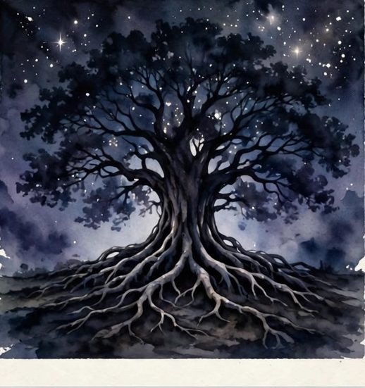
A great lamp burning steady in the middle of the observatory floor, every instrument in the room oriented toward it
Ask what a life orbits and the answer, in the register's long experience, is rarely the thing on the citizen's letterhead. The center that holds is usually something quieter and older: a person, a place, a vow made before witnesses or before none, a version of the good life absorbed so early that it feels like physics rather than opinion. Everything else in the sky — work, weather, even loves of apparently greater brightness — takes its period from that center. When the biography confuses the citizen, the desk advises them to stop examining the orbiting bodies and locate the mass they are all falling around.
Centers differ in character, and the hall is careful not to rank them. Some citizens orbit a person, and their skies are tidal, personal, and warm. Some orbit a work, and their weather is set in distant countries of the mind. Some orbit an idea — a faith, a craft, a standard of decency — and these are the steadiest skies in the register and, at their worst, the loneliest. What matters is not which center but whether it is acknowledged. An unacknowledged center still governs; it merely governs without consultation.
The discovery of one's center is usually retrospective and slightly comic: of course; it was always that. The register logs the discovery among the most valuable entries a survey can contain, because a citizen who knows their center can predict their own weather, forgive their own eccentricities of orbit, and — in the great crises — distinguish between a deviation and a defection. The center holds, as the entry's title promises. What a person orbits in secret, they orbit entirely; the register prefers the arrangement brought into the light, where it can be steered by. The entire art lies in knowing what it is, and letting it.
39Habits Have Gravity
Not all gravity in the inner universe belongs to great masses. The hall now considers the small, cumulative kind: habits, which pull the way a path pulls the walker — not by force but by being the lowest route between today and tomorrow. A habit is a tiny gravity, negligible in a single day. Across a decade it is the strongest force in the sky, quietly deciding which regions of the universe get visited daily and which have not been entered since childhood. The register weighs habits accordingly: in years, not in newtons.
The arithmetic deserves a moment's respect. The morning page, the evening walk, the glass, the grievance rehearsed at the same hour — each bends the trajectory by a degree so small no instrument of the day can detect it. Companions on the same road diverge by whole countries on no other fuel than this. Citizens who wish to change their orbit and begin by wrestling the great masses — the job, the city, the vows — are advised by the desk to first inspect the small gravities, which are cheaper to move and, being moved, eventually relocate the large ones without a battle.
There is mercy in this physics, and the hall is glad to record it. A life need not be seized and redirected by heroics; it can be curved, gently and continuously, by the patient installation of small pulls in the desired direction. The path around the hill was not dug. It was walked. The Keeper's closing note for the entry is the one surveyors copy out most often: you are already falling toward something. Falling, in this estate, is not the disgrace it is elsewhere; everything in the sky is falling around something. The only question the universe asks is whether you chose the mass.
40People in Orbit
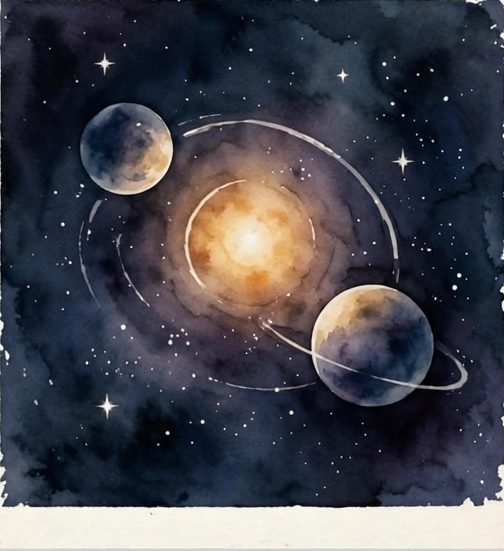
Two porch lights burning on opposite sides of a dark valley, each aware of the other across the distance
The hall's last word, before it proceeds to wider skies, belongs to the people in orbit: those other universes whose paths are bound to one's own. Every citizen carries a small company of them — the few whose gravity is a standing condition of the home sky. Their weather crosses into ours. Their seasons set the dates of our expeditions. The register does not call this dependence, because it has a better word for it, the oldest word in astronomy: a system. Solitary universes exist in theory. The desk has never been shown one.
Orbits, properly observed, are mutual, and the mutuality is the part citizens chronically under-report. Each person in one's orbit is simultaneously a center of their own system, with the citizen as a body in theirs — pulling, warming, occasionally eclipsing. The register's charts of long relationships are drawn double for this reason, and they are beautiful documents: two skies, decades long, each unimaginable without the other's light in the margin. To be in orbit is not to be diminished. The charts are beautiful, but they are also practical: they predict, better than any weather report, where a citizen will be found in a crisis. It is to be accompanied at the level of physics.
The practical wisdom of the hall follows from the picture. Orbits are maintained by the same small gravities as everything else here — the regular call, the kept promise, the letter answered while it is still warm — and they decay by the same neglect, at the same stately pace, correctable by the same patient means. The Keeper closes the fortieth entry of the register with the sentence the whole survey has been approaching: no universe is an island. It is a system, shining in company, and the company is half the light.
41The Ones I Circle
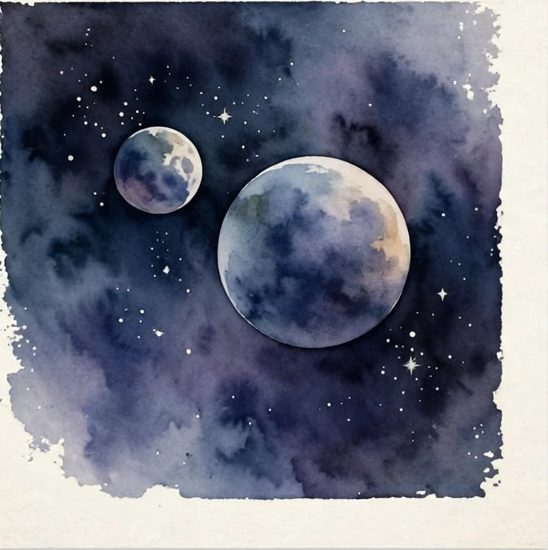
A lamp stands at the center of the hall; the chairs are arranged in a slow ring around its light.
Every observatory keeps a chart of the near sky, and on it a small company of lights that never quite leave the frame. These are the ones a person circles: the friend whose name steadies the room, the elder whose voice still sets the compass, the child who has rearranged the whole heavens by arriving. Their gravity is not argued with. It is simply the shape the days take, the way a path curves around a well without anyone posting a sign. To circle someone is not to lose one's own course; it is to admit that some courses are drawn by more than one hand.
The register notes that circling is an old arrangement, older than any house. The moon does it without embarrassment, and the tides keep the appointment. In a human sky the circling is done by attention: the call made on the ordinary Tuesday, the story asked for twice, the chair kept in the good light. None of it is announced as devotion. It accumulates the way orbits do, by small corrections faithfully repeated, until one day the keeper looks up and sees that the whole inner weather has been organized around a few beloved lights, and that this was never a diminishment. It was the architecture.
There is no shame in the list being short. A sky can hold many stars and still be navigated by three. The ones we circle are not always the brightest or the nearest; sometimes they are simply the ones whose light arrived at the hour it was needed and has been arriving, steadily, ever since. The desk keeps their names in the front of the log, not as a claim upon them but as a record of gratitude for the shape they give the dark. To know whom you circle is to know the true map of your own sky.
42Escape Velocity, and When It Is Needed
Not everything that holds us is holding us kindly, and the observatory is honest about this. There are rooms in a life, habits, old arrangements, whole weather systems of the past, whose gravity has stopped being a home and become a weight. Escape velocity is the keeper's plain term for the speed a thing must reach to leave such a pull for good. It is not anger, and it is not drama. It is a number, arrived at calmly: this much energy, this much resolve, and the orbit breaks. The sky does not scold the departing star. It simply records the new course.
The desk distinguishes carefully between the restlessness that wanders and the departure that is owed. Most orbits deserve their patience; a difficult season is not a reason to burn the whole chart. But there comes, in some lives, a recognizable moment when staying costs more than the leaving ever will — when the same lesson has circled a dozen times and begun to repeat its bruises. Then the needed speed is not recklessness. It is arithmetic. The keeper who has watched the sky long enough learns to tell a genuine escape from a tantrum by one sign: the true one is quiet, prepared, and sad in the right places.
What is remarkable, the log observes, is how rarely the full speed is needed again. A person who has once left a gravity that was harming them carries the knowledge in the body like a remembered road. The next threshold is recognized sooner and crossed with less fire. Escape velocity, once achieved, becomes less a crisis than a competence — proof filed in the register that the inner universe is not a prison with good scenery. Its doors, though heavy, were built to open from the inside, and some of them open outward onto a larger sky.
43Falling Toward Something Good
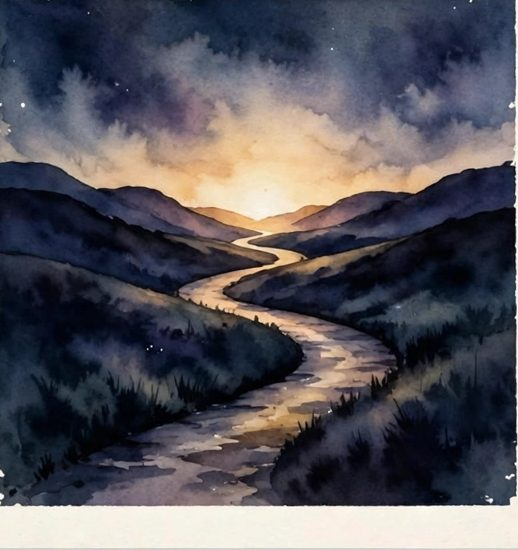
Petals, sparks, and one dropped ribbon all drift the same way across the courtyard: toward the open door.
Falling has a poor reputation in the ledgers of the careful, and the observatory wishes to file a correction. In the inner universe, falling is simply what motion toward a great love looks like from the outside. The apple falls toward the earth; the earth falls, endlessly and serenely, toward the sun, and calls the falling its year. A person falls toward the work that claims them, toward the friend whose house feels like weather changing for the better, toward the city, the craft, the quiet life assembling itself room by room. It is gravity doing its kindest work, and it should not be mistaken for losing one's footing.
The keeper notes the difference between a fall and a collapse with the patience of long practice. A collapse is structure failing; a fall toward something good is structure arriving. The heart knows the distinction before the mind has finished its meeting about it. There is a lightness in the true fall, a sense of the air cooperating, of obstacles rearranging themselves into a path. Even the fear that attends it is a clean fear, the kind felt on a high stair with a good rail. The register underlines this: not every surrender is a defeat; some are simply the shortest honest route between a life and its center.
So the desk counsels a certain courtesy toward one's own falling. Do not interrupt it with apologies. Do not demand that it proceed in a straight, dignified line, since nothing in any sky has ever traveled so. Let the curve be a curve. The things worth falling toward are patient; they exert their pull year after year without once raising their voice, and they are still there, and still shining, when the long arc finally arrives. In the log of the observatory, the best entries are not the escapes. They are the arrivals that began, unnoticed, as a gentle and willing fall.
44The Moon I Keep
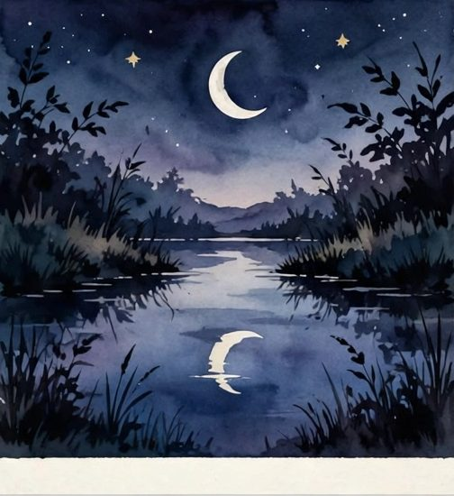
A small moon, no bigger than a lantern, hangs above the garden wall and lights the path home.
Every inner universe keeps a moon, whether its owner has named one or not. It is the private light by which the night side of a life is navigated: a memory that glows, a promise made to oneself in a hard year, the face of someone absent whose counsel still arrives on schedule. The moon I keep is not the grand sun of public purpose. It does no work in the daytime world. Its office is humbler and more essential — to make the dark hours legible, to give the tides of feeling a rhythm, to be there, reliably changed and reliably the same, whenever the keeper looks up.
Phases are the moon's honesty, and the observatory respects them. The kept moon is not always full. There are weeks when the private light is a sliver, when the sustaining memory recedes and the night is mostly night. The register does not treat this as failure. It treats it as astronomy. What matters is that the moon keeps its orbit through the dark of itself, waxing again on a schedule older than discouragement. A person who knows their moon's phases stops panicking at the thin nights. They light a lamp, they keep the log, and they wait with the confidence of long observation.
To name one's moon is a small, serious act of housekeeping, and the desk recommends it. Say plainly what light you steer by when the sun of circumstance is down: the grandmother's sentence, the vow from the hospital corridor, the tune, the shoreline, the unfinished work waiting like a lamp in a window. Named, it can be tended. Tended, it does not fail at the crucial hour. The moon asks very little — a glance now and then, an honest acknowledgment of its phases — and in return it does what moons have always done for travelers: it makes the night a place one can cross.
45Near Orbits and Far Ones
The chart of a life holds orbits at every distance, and the observatory has learned to honor the far ones without apology. There are people whose light reaches us across years of silence: the friend from another country of the past, the teacher long retired from our days, the cousin whose news arrives like weather from a distant coast. Their orbit is wide, their appearances rare, and yet the register insists they are not lesser members of the sky. Distance in an orbit is a measurement, not a verdict. Some of the steadiest influences in a life travel the longest roads to reach it.
Near orbits ask more and give more, and they have their own honest complications. Proximity means friction: the daily weather of the beloved, their clouds crossing our sun, the small collisions of two lives sharing one climate. The far orbit is spared all that and pays for the sparing with thinness — long light, little warmth. Neither arrangement is the correct one. The keeper simply notes which souls are near and tends them at the frequency nearness requires, and which are far, and tends them at the frequency distance allows, and refuses to confuse the two accountings.
What the log finds beautiful is that orbits are not fixed at their first drawing. Lives drift. The far friend moves home; the daily companion sets out on a wide arc of their own; the chart is redrawn in pencil, again and again, by a patient hand. The skill the observatory teaches is to love at the distance that exists, rather than the distance that was promised or preferred. A far orbit, loved properly, still bends the path of a life toward kindness. And a near one, loved properly, is allowed its weather. The sky is large enough for both arrangements, and so, on good days, are we.
The Observatory Desk
One desk receives all correspondence for this universe — questions, corrections, greetings, and word of skies you are learning to read. It is read in the order it arrives.
46When Orbits Cross
Two chalk arcs meet above the courtyard fountain, and for one moment the spray catches double light.
Sooner or later in any well-kept sky, orbits cross. The friend of one season becomes the colleague of another; the stranger at the gate turns out to be traveling the same ellipse, in the opposite direction, at the same hour. Crossings are the punctuation of the inner universe — brief, bright, and disproportionately remembered. The register holds that a crossing is not an accident of the chart but one of its purposes. Two lives that intersect even once exchange something that neither could have manufactured alone: a sentence, a warning, a door shown quietly from the inside.
Not every crossing is gentle, and the observatory declines to pretend otherwise. Paths intersect at angles, and angles can strike sparks. The person who crosses our orbit carrying an old grievance, the rival whose ellipse keeps intercepting ours, the love who passes at the wrong season — these are also crossings, and they also exchange something, though it may arrive as a lesson wearing the clothes of a collision. The keeper's advice is unglamorous: do not curse the geometry. Note what the crossing revealed, repair what can be repaired, and let the arcs separate with as much grace as the mathematics permits.
The comfort the log offers is that crossed orbits rarely cross in vain. Even the brief ones alter the trajectory by a degree, and a degree, given enough years of travel, becomes a different country entirely. Many a life can be explained by two or three crossings, each no longer than an afternoon. So the desk keeps the dome open and the chart current, and treats each intersection — welcome or difficult — as an entry worth recording in full. The sky is not a private road. It is a crossing-place, and to be crossed, now and then, is the price and the proof of being in motion.
47Held, Not Trapped
A bird rests in the open palm of a statue, free to leave, entirely unbothered about it.
There is a difference, the observatory insists, between being held and being trapped, and the whole art of belonging lives in the distinction. A held thing can leave; that is precisely what makes its staying mean something. The planet is held by the sun and is not its prisoner. The boat is held by its anchor in the harbor and is a boat still, made for weather. When the register examines the bonds of a life — the marriage, the vocation, the town, the promise — it asks one question before all others: does this gravity leave the door unlocked from the inside? If it does, the holding is a form of honor.
Trapped gravity announces itself differently. It fears the door. It keeps its held ones by diminishing their speed, narrowing their sky, auditing their affections for rival lights. The keeper has seen such arrangements drawn on charts and has learned to name them without flinching, because naming is the first instrument of rescue. But the log is equally careful with the opposite error: the restlessness that calls every honest bond a cage. A trellis is not a prison to the vine. Some gravities are simply the shape love takes when it intends to stay.
Held, then, is the estate's preferred word for the good gravities, and it is used with gratitude in the register. To be held by people who would release you, by work that would survive your leaving, by a place that asks nothing but your presence — this is not the opposite of freedom. It is freedom's domestic form, the kind that can be lived in. The moon is held by the earth and spends its liberty shining. So the dome stays open, the orbits stay voluntary, and everything in this sky that remains, remains because it chooses to — which is the only kind of remaining the keeper trusts.
48The Gravity of Gratitude
Of all the forces the observatory has charted, gratitude is the quietest and possibly the strongest. It does not announce itself with light. It works the way gravity works — by bending paths. A life in which thanks is regularly given begins, almost imperceptibly, to curve toward the sources of its good: toward the people, the places, the unearned mercies. The register has compared the charts of the grateful and the charts of the merely fortunate, and the difference is visible from across the room. Fortune scatters. Gratitude organizes. The same events, entered in the log with thanks, assemble themselves into a constellation; entered without it, they remain a list.
The keeper is careful to describe gratitude as a practice rather than a feeling, since feelings keep their own unreliable hours. Gratitude, in the observatory's usage, is an act of astronomy: the deliberate noting of what has pulled us toward life. It is done in the morning, at the table, in the margin of the log, on the bad days especially — not because the bad days deserve flattery but because they are when the bending matters most. A thanked hardship does not become pleasant. It becomes located. It takes its place in a chart that has a center, and a life with a center can survive a great deal of weather.
There is a final entry on this force, and the desk makes it plainly: gratitude is the one gravity that increases the mass of both parties. The thanked person is not diminished by being a center; they are confirmed in it. The thanking person is not indebted into smallness; they are enlarged by having located their good accurately. So the register closes the hall of orbits with its gentlest finding — that a universe held together by thanks needs no other enforcement. Everything in it stays because staying has become, by slow degrees, the most natural motion in the sky.
49Dark Matter
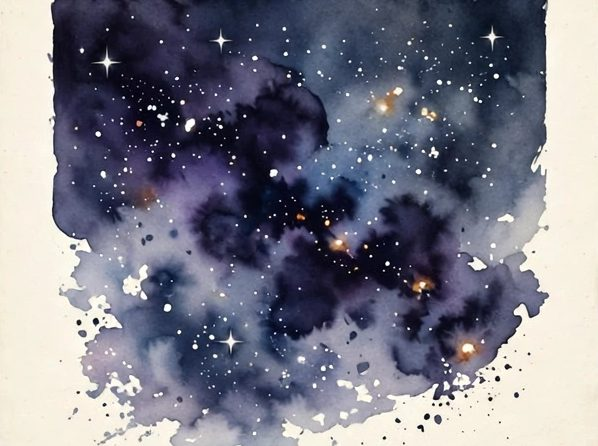
The garden at night is mostly unseen shapes, and yet the paths still run exactly where the unseen shapes require.
The observatory now turns its instrument toward the largest and least visible province of the inner universe: the dark matter of a life. The term is borrowed lightly, the way one borrows a coat for an evening walk. It names everything in a person that exerts real force without presenting itself for inspection — the unexamined inheritance, the motives under the motives, the weather of a childhood still moving through adult rooms. It cannot be photographed. It does not shine. And yet the keeper's charts are unambiguous: the visible life, the lit and explainable part, travels exactly as this unseen majority dictates. The bright self is the smaller country.
It is important, the register notes, that dark matter is not a synonym for damage. The dark of a life holds the shameful entries, certainly, but it also holds the unspoken strengths, the loves never declared, the griefs that were carried so quietly they were mistaken for temperament, the loyalties formed before memory. Most of what is deepest in a person has simply never been issued a lamp. The observatory's doctrine is therefore one of respect rather than suspicion: the unseen is not the enemy of the seen. It is its foundation, its ballast, and the greater part of its story.
So this hall proceeds without torches and without fear. The aim is not to drag the dark into floodlights — the keeper has learned that some things grow only in shade — but to chart its presence honestly, the way one charts a coastline one cannot land on. To know that most of one's universe is dark matter is not a diagnosis. It is a relief disguised as astronomy. It explains the mysterious weight of ordinary days. It forgives the self for being larger than its own explanations. And it leaves the log with a humbler, truer entry: here is a life, mostly unseen, entirely real, and still — remarkably — in motion.
50The Mass Nobody Sees
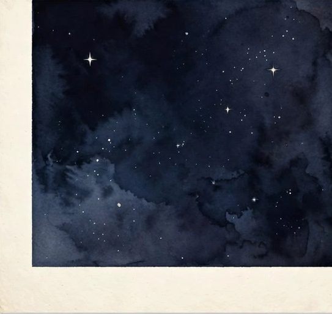
Beneath the orchard floor, drawn in silver thread, the roots go on much farther than the branches.
Ask after the mass of a life and most keepers will point to the visible inventory: the work with a title, the house with an address, the opinions delivered in company. The observatory points lower and quieter. The mass nobody sees is the greater tonnage — the thousands of unrecorded decisions, the private disciplines, the sorrows metabolized alone, the kindnesses performed off the record and promptly forgotten by everyone except the universe, which forgets nothing of the kind. A person's true weight in the world is mostly this: the accumulated gravity of a life lived largely unwitnessed, and none the less real for it.
This is why the charts of strangers so often surprise us. We meet the visible tenth of a person and confidently predict their course, and then some small pressure — a crisis, a kindness, a door unexpectedly opened — reveals the submerged mass steering everything. The slow colleague turns out to have carried a family through a decade of nights. The cheerful neighbor's steadiness is ballasted by losses that would sink a louder ship. The register's standing instruction follows: estimate every soul generously. The instruments only ever register the shining part, and the shining part has never once been the majority of anything.
There is comfort in this entry for the keeper's own chart. A life that feels undocumented — its best hours unphotographed, its finest efforts unrewarded in any ledger the world keeps — has not therefore been light. Mass does not require an audience. The universe keeps its own accounts, in its own patient units, and by those units the quiet life of integrity, tended daily in the dark, is among the heaviest objects in the sky. The desk closes the entry without flourish: the mass nobody sees is still mass. It still bends the light. It still, in the end, decides the orbit.
51Known by Its Effects
The observatory's method for the unseen is the oldest in its book: if a thing cannot be viewed, watch what it moves. Dark matter in a life is known by its effects, and the effects are not subtle to a trained eye. The conversation that always swerves at the same corner. The opportunity declined three times for three different stated reasons. The disproportionate weather that arrives with a certain name, a certain month, a certain tone of voice. None of these is the thing itself. All of them are its signature, written across the visible sky in a hand that long practice learns to read.
This method has a gentleness to it that the keeper values. It does not require the dark to confess. A person need not excavate their whole history or name every buried weather system in order to navigate by the chart. It is enough to notice where the swerves occur, and to mark them, the way sailors mark a reef they have never seen: not by looking at it, but by respecting the pattern of the waves above it. Navigation improves. Collisions decrease. The log grows more accurate without the self having been put on trial even once.
Known by its effects — the phrase could stand over the whole science of knowing anyone, including oneself. We never see another's dark matter directly; we see the bending of their light around it, and if we are wise we call that bending information rather than mystery or blame. The desk's final word on method is therefore a word about courtesy. Chart your own unseen by its effects, and extend the same astronomy to everyone who crosses your sky. What moves them is mostly invisible. What is visible — the swerve, the weather, the gravity — is quite enough to steer by, and to forgive.
52The Unsaid Has Weight
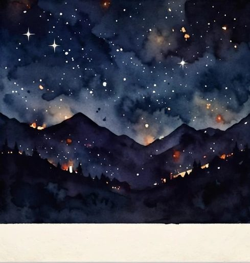
A sealed envelope, never sent, holds down a whole stack of lighter papers on the desk.
Among the heaviest objects in the inner universe, the observatory ranks the unsaid near the top. The apology composed a hundred times and never delivered. The declaration that missed its season. The question that would have changed the household weather and was swallowed, courteously, at the table. These unspoken things do not evaporate for having been withheld. They take up residence. They acquire mass. The keeper can sometimes feel them in a room before a word is exchanged — a slight thickening of the air, a gravity in the silences, pulling every sentence a few degrees off its intended course.
The register is careful, here, to separate kinds. Some unsaid things are ballast: mercies withheld for good reason, truths kept in trust, the thousand small silences by which civilized people spare one another. These weigh, but they weigh like ballast weighs — usefully, keeping the ship upright. Other unsaid things are cargo spoiling in the hold: resentments unspoken until they ferment, love unspoken until it curdles into grievance, grief unspoken until it governs from below. The distinction is not in the silence but in the keeping. Ballast is chosen. Spoilage is merely postponed.
The desk offers no doctrine of total confession; the observatory is a place of observation, not of floodgates. It offers only a scale. Weigh the unsaid thing, honestly, the way the keeper does each spring: is it keeping me upright, or is it pulling my light off course? Some entries, weighed, will be sent at last — a letter, a sentence across a table, years late and exactly on time. Others will be set down deliberately, forgiven their errand, and left unwritten on purpose. Either way the mass is accounted for. And a universe whose weights are known, the log concludes, sails measurably straighter than one pretending to be light.
53Inherited Gravity
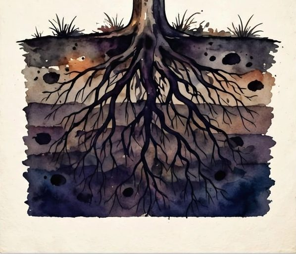
Three generations of the same chair stand in a row by the window, each one worn in the identical place.
Nobody's universe begins empty, and the observatory's oldest charts are drawn in a hand not the keeper's own. Inherited gravity is the pull of everything that was orbiting before we arrived: the family's way with money and silence, the ancestral weather around anger or tenderness, the unspoken rules absorbed at the height of a child's chair. Long before a person chooses their first orbit, they are already moving in curves laid down by the dead and the beloved alike. This is not an accusation. It is simply the initial condition of every sky the desk has ever been asked to chart.
The keeper notes that inherited gravity is a mixed estate, like all inheritances. In the same bequest that delivers the fear of asking, there is often the gift of endurance; alongside the family silence about sorrow, a family genius for showing up with soup. The work of the observatory is not to repudiate the whole pull but to survey it — to learn which of one's most automatic motions were personally chosen and which were merely early. Much of what feels like character turns out, on inspection, to be inheritance wearing character's coat, and the discovery is less a crisis than a widening of the chart.
What is done with the discovery matters more than the discovery itself, and the register's counsel is measured. Gratitude where gratitude is due: some of those old curves carried us through weather we could not have survived unheld. Amendment where amendment is needed: a curve can be corrected by degrees, and degrees, compounded over years, are how whole destinies quietly change hands. And mercy, finally, for the ones who handed down the gravity, who were themselves moving in curves they did not draw. The chart is old. The hand that holds the pencil now is one's own. That, the log says, is inheritance enough.
54The Patterns Under the Patterns
Every keeper eventually discovers that the visible patterns of a life are only the topmost layer. Under the pattern of chosen work lies a pattern of choosing; under the pattern of one's loves, a pattern of what love was permitted to look like; under the arguments, an older treaty about what may safely be wanted. The observatory calls these the patterns under the patterns, and it regards their discovery as the beginning of real cartography. Anyone can chart the weather on the surface. The serious work is sounding the currents that decide where the weather keeps coming from.
The sounding is done slowly and without drama, the way the desk does everything. A repetition noticed. A resemblance admitted: this new room has the old room's furniture. The log fills with small, unglamorous recognitions — I grieve the way my house grieved; I celebrate at the volume I was taught celebration was safe; my ambitions stop, politely, at the exact fence where the ambitions before mine stopped. None of these entries is a verdict. They are soundings, marked in pencil. The water is deep here. The water is the same temperature as home. That is all, and it is a great deal.
The promise of this hall is not that the deep patterns can be abolished; the observatory makes no such promises and trusts no one who does. The promise is narrower and better: a pattern known is a pattern that can be consulted, negotiated with, occasionally declined. The current does not vanish because the sailor has charted it. But the sailor stops calling the current bad luck. So the register closes its soundings with the entry it closes so much with — a small benediction for accurate maps. Chart what is under. Sail accordingly. And keep some tenderness for the depths, which after all were only ever trying to carry you somewhere survivable.
55What Bends the Light
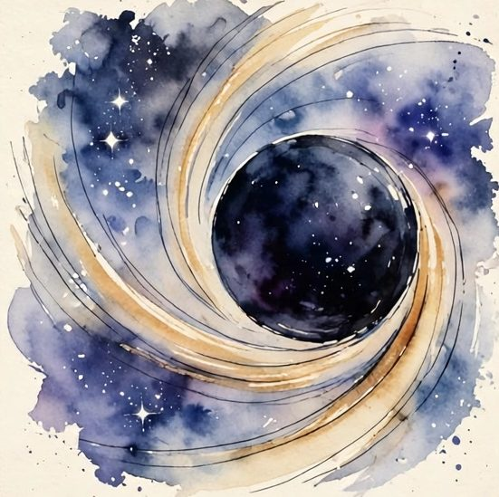
The lamplight reaching the far wall arrives curved, having passed the great dark vase on the mantel.
The surest instrument the observatory owns for detecting the unseen is a simple one: watch how the light bends. A story retold always arrives with the same small warp. A compliment lands at an angle its sender never intended. The memory of an ordinary afternoon comes back lit like a festival, or an actual triumph returns gray as ash. Wherever the light of events is consistently curved, something massive and invisible is sitting beside the path. This is the deep pattern announcing itself without words — bending every beam that passes near it into the same signature arc.
Keepers learn the common lenses of the warp the way sailors learn the local rocks. Pride bends incoming light toward the self and calls the curve modesty. Old shame bends it away, so that praise arrives pre-discounted and love arrives addressed to someone else. Fear bends it downward, flattering nothing, forecasting weather worse than any sky has yet produced. None of these lenses is a moral failure. They are masses, accumulated honestly over a lifetime of weather, and they bend the light of saints and scoundrels with perfect impartiality. The instrument only reports. It is the keeper who decides what the report is for.
And the decision the register recommends is, once again, mostly a matter of knowing. A bend that is charted can be corrected for, the way navigators correct for a known current — not by cursing the water, but by steering the extra degree. Over years, some masses even shift; praise allowed to land straight, again and again, has been known to straighten a warp that decades had set like glass. The log offers no guarantee, only the observation it trusts most in this hall: the light was never lying. It was only traveling through a real universe, past real gravity — and a traveler who knows where the bending happens is already halfway home.
56Most of the Universe Is This
From the tower at dusk, the lit windows of the valley are outnumbered, kindly, by all the dark and quiet fields between them.
It steadies the keeper, on certain nights, to remember the proportion. Most of the universe is this: unseen, unlit, unrecorded, quietly exerting its pull. The bright episodes of a life — the achievements, the declared loves, the datable turning points — are the minority report. The majority is the dark matter: the formed and forming self below the waterline of explanation. A person is not mostly their story. A person is mostly the vast, ungossiped interior that the story occasionally visits and never exhausts. The observatory regards this proportion not as a problem of the design but as the design's chief mercy.
For consider what the alternative would be: a self entirely lit, entirely known, every motive floodlit and every corner swept for inspection. Such a universe would have no reserves. Nothing in it could ripen undisturbed, the way the best things in any garden ripen in the dark of the soil. The unseen majority is where the future is stored. It is where next year's courage is quietly compounding, where the unformed work gestates, where the self keeps the raw material that its conscious management would certainly have tidied into oblivion. The dark is not where the life is missing. It is where the life is kept.
So the register enters the proportion without a trace of apology: most of the universe is this, and the keeper would not trade the ratio. To make peace with being mostly unseen — even, and especially, to oneself — is to stop demanding that a soul produce credentials for its own depths. What is down there is working. The tides prove it nightly. The light that does arrive arrives bent around real mass, and the mass, though dark, is ours, inherited and earned and still accreting, star by unlit star. The census of a life, taken honestly, is a census of wonders mostly uncounted — and the counting, the log says, was never the point.
57Naming Dark Matter Lightly
There is an art, practiced at the Observatory Desk, to naming the unseen without pretending to have captured it. The keeper writes the labels in pencil. The heavy quiet in a household becomes, provisionally, the unspoken treaty. The private sorrow that steers a life's choices becomes the ballast. A name given lightly does two kinds of work at once: it makes the dark matter discussable — with oneself, in the log, across a trusted table — and it keeps the discussion honest, since everyone at the desk knows the word is a handle and not the thing. Handles are for carrying. No one at the observatory mistakes them for the weight itself.
Naming heavily is the error this hall exists to prevent. A heavy name arrives with a gavel: it declares the dark to be a verdict, a flaw with paperwork, a single story that explains the whole chart and excuses the keeper from further observation. The desk has seen such names do their damage — a person reduced, in their own log, to one entry, one warp, one inherited weather system, as if the universe were a courtroom and the census a sentencing. Against this the register sets its plain rule: the unseen in a life is to be described the way weather is described — accurately, respectfully, and with the standing expectation of change.
So the labels stay in pencil, and the keeper revises them as the years supply better astronomy. What was entered at twenty as coldness may be re-entered at fifty as a well-kept grief; what was shame may resolve, under longer looking, into loyalty that never found its language. This is not evasion. It is accuracy arriving at its proper pace. The dark does not object to being named; it objects, if it objects to anything, to being named finally. Keep the pencil sharp, keep the eraser closer, and let the chart of the unseen remain what every honest chart is — a working document, in a living hand, under a sky that is still being discovered.
58The Dark Is Not the Enemy
The night garden, unlit, is where the jasmine keeps its strongest scent and the well its coolest water.
A word must be entered plainly in this hall, since so much of the world's advice assumes the opposite: the dark is not the enemy. The unseen majority of a life is not a conspiracy against the lit minority. It does not crouch. It does not plot. For the most part it does the oldest and kindest work there is — it holds things together. The patterns under the patterns keep a self continuous across decades of change. The unsaid keeps some households standing. The inherited gravity, for all its awkwardness, is also the reason anything in us knows how to endure. A universe at war with its own dark is a universe spending its strength on the wrong front.
The keeper is not naive about the shadows; the register contains difficult entries, and some masses in the dark do bend the light toward sorrow with a consistency that must be faced. But even these, on long acquaintance, rarely prove to be enemies in the military sense. They prove to be old arrangements — protections installed in harder years, vigils kept past their necessity, griefs doing guard duty at doors that are no longer threatened. An arrangement can be thanked and retired. An enemy can only be fought, and fighting one's own depths has a way of becoming the deepest habit of all.
So the observatory's posture toward the dark is neither siege nor surrender but something older: neighborliness. Know it is there. Learn its effects. Speak of it in pencil. Leave it its dignity and its shade, and attend to the lit rooms without the nagging sense that the real story is elsewhere and worse. The log's summary of the whole hall could be carved over the desk, if the desk permitted carving: most of you is dark, and the dark is mostly on your side. The rest of the work — the charting, the thanking, the gentle correction of course — is just what a keeper does with a universe they have stopped being afraid of.
59What the Dark Carries
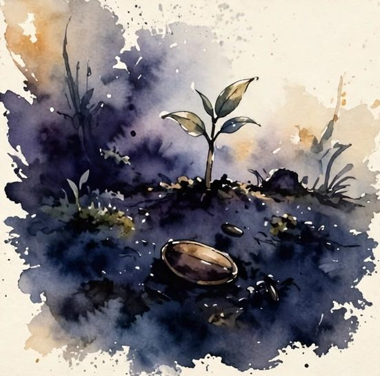
A covered wagon crosses the night plain, its canvas glowing faintly from a lamp hung somewhere inside.
It is worth pausing, near the end of this hall, to inventory what the dark actually carries, since the manifest is more honorable than rumor suggests. It carries the early instructions, learned before language: whose arms were safe, what the silences meant, how love sounded through a wall. It carries the ungrieved and the uncelebrated in the same hold — the losses that never got a ceremony and the joys too private or too large for the available words. It carries skills the conscious mind never ordered: the instinct that brakes the car, the tact that arrives unbidden at the difficult table, the knowing that cannot explain itself and is right anyway.
It carries, too, the drafts. Every life in the register is preceded in the dark by versions of itself that were never performed: the road not taken, rehearsed nightly for years; the person one might have been in another country of circumstance, still keeping their small lamp lit down there. The observatory does not mock these passengers. They are part of the mass, and they bend the light of the actual life in ways the keeper ignores at some cost. A dream deferred is still cargo. It still has weight, and the ship rides differently — deeper, steadier, sometimes sadder — for everything it carries unshown.
The manifest's last items are the ones the keeper reads standing up. The dark carries the dead, faithfully, in the only archive that never burns. It carries their sentences in our mouths, their gestures in our hands, whole weather systems of their making still moving through our days. And it carries, beneath everything, the simple unlit fact of continuance — that a self persists through sleep and sorrow and reinvention, held together by masses it cannot see. What the dark carries, in sum, is most of the cargo of being a person. The lit deck is real, and delightful, and small. The ship is the hold. Honor the hold.
60A Census of the Unseen
Every few years, the observatory conducts a census of the unseen, and it is conducted in a particular spirit: not an audit, not an excavation, a census — the simple, civic act of acknowledging what is there. The keeper walks the dark floors of the house with a lantern and a ledger and writes down, in pencil, what the effects have revealed. The old treaty. The ballast. The inherited weather. The cargo of drafts and dead. No door is forced for the purposes of this count. A census that breaks down doors has stopped counting citizens and started hunting fugitives, and the unseen, treated as fugitive, only learns to hide better.
The findings, when the lantern comes back to the desk, are usually less dramatic than feared and more moving than expected. Most of the dark is ordinary. Most of the mass is love, habit, memory, and protection in their unlit forms. The entries that do require attention are, by then, already softened by having been approached without accusation; a pattern greeted as a citizen behaves differently from a pattern dragged in as a suspect. The census changes little directly. It changes the keeper's posture toward everything, which — the register has observed for years — is the mechanism by which most durable change actually occurs.
The hall of dark matter closes, then, not with a conquest but with a count, entered in the log in the keeper's best hand. Here is a life: so much of it visible, and so much more of it not, and the ratio is not a scandal but a signature — the same proportion, as far as anyone can tell, that the outer universe keeps. We are built to the specification of the cosmos we came from: a little light, a great deal of dark, and gravity enough to hold it all in one turning whole. The census is complete. The lantern is hung by the door. And the dark, counted and respected, settles back to its long work of carrying us.
The Observatory Desk
One desk receives all correspondence for this universe — questions, corrections, greetings, and word of skies you are learning to read. It is read in the order it arrives.
61The Observatory
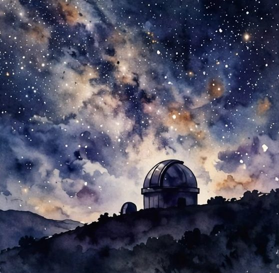
On the highest floor, under a dome of dark glass, one chair faces the whole width of the sky.
Every inner universe, however crowded its lower floors, keeps one room at the top: the observatory. It is not a large room. It contains a chair, an instrument, a log, and a dome that opens. What it does not contain is equally deliberate — no audience, no urgency, no machinery of judgment. The observatory is the part of a life set aside for watching the rest of the life, and it asks only for what all watching asks: a little altitude, a little quiet, and the willingness to record what is actually there rather than what was scheduled to be there.
The keeper is firm on one point of architecture: the observatory is not an escape from the house but its crowning room, and the stairs to it are ordinary stairs, climbed in ordinary clothes on ordinary days. A person does not visit their observatory only in crisis, any more than an astronomer opens the dome only for comets. The regular traffic is the point — the evening glance, the weekly entry, the habit of altitude. Lives that are watched regularly rarely ambush their owners. The surprises still come, but they arrive in a house where someone is, habitually, at the window.
What the observatory sees, it sees without flinching and without sentencing, which is the whole discipline of the place in one sentence. Grief observed is not grief solved; a pattern watched is not a pattern pardoned or condemned. It is simply — and this is no small thing — a pattern brought into the company of a witness who is also its owner. The log's motto for the hall might be set in brass, if the desk allowed brass: nothing in this sky is beneath notice, and nothing in it is above kindness. The dome opens. The chair is occupied. The long work of seeing begins again, as it does every clear night of a life.
62The Part That Watches
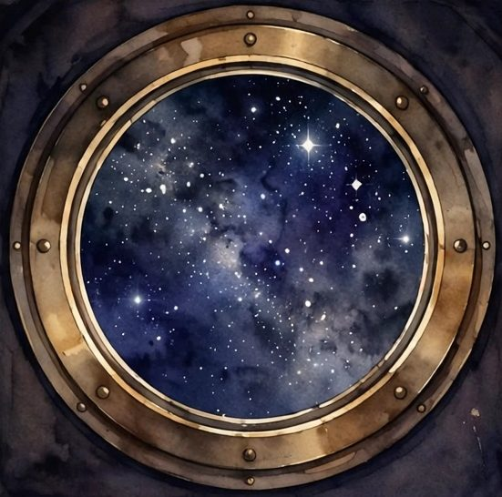
In the portrait gallery, one painted figure has turned its chair around to face the room instead.
Among the population of the inner universe — the worrier, the worker, the child still at large in the cellar, the host, the critic, the keeper of old scores — there is one citizen of particular interest to this hall: the part that watches. It does not argue at the table. It does not volunteer for the committees of regret. It sits, mostly, a little apart, and it notices. When the storm of the day has passed through the house, the watcher is the one still able to give a clear account of the weather. Every person has such a part. Not every person has yet made its acquaintance.
The acquaintance, the register reports, is usually made in a quiet hour and is quietly life-changing. To discover that one is not identical with one's weather — that there is a seat in the house from which the anger can be watched being angry, the sorrow watched being sorrowful, the joy watched like weather arriving — is to be handed the keys to the observatory itself. The watching part does not suppress anything. It does something rarer and more useful: it keeps company. A feeling with a witness behaves differently from a feeling alone, the way a child behaves differently in a room with a calm adult in it.
The desk is careful to protect the watcher's reputation, since it is often mistaken for coldness. It is not the absence of feeling; it is feeling's observatory, and the universe is warmer for having one. The watcher weeps at the funerals too — but it also notices the light through the chapel window, and files that beside the grief in the same honest log. To cultivate the part that watches is not to leave the life. It is to attend it fully, from the one seat in the house where the whole sky is visible at once. And from that seat, the log says, everything — even the storms — looks a little more like weather, and a little less like the end of the world.
63Attention Is a Telescope
The observatory owns one instrument above all others, and it is not made of brass. Attention is a telescope: whatever it is pointed at grows larger, clearer, and more detailed, until it fills the field of view like a world. This is the instrument's glory and its entire danger, for the telescope is obedient. It enlarges the insult and the kindness with the same faithful optics. It will spend a whole night magnifying a single slight, if that is where it is aimed, and report at dawn that the universe is made of slights. Aim is therefore the keeper's first and most consequential skill — more consequential, the register insists, than eyesight.
The log records what long looking does to its objects, because the telescope's deepest property is not magnification but revelation. A grievance, looked at long and steadily, begins to resolve into its components: the old hurt inside the new one, the fear inside the anger, the request inside the complaint. A joy looked at long resolves too, into gratitude, into the faces arranged around it like moons. Even boredom, given a full night of the glass, turns out to be populated. The instrument does not manufacture these details. They were there, below the threshold of the glance. Attention is simply the decision to stay past the threshold.
So the desk's counsel for the instrument is practical and brief. Clean it often — a later room in this hall is devoted to the lenses. Point it deliberately, the way one would point anything powerful: at what one intends to navigate by. And keep a record of where it has been aimed, since the log of aimings is, in the end, the truest autobiography anyone writes. A life is not only what happened in it. A life is what the telescope was pointed at while it happened. Aim, therefore, like someone who knows the instrument is also the author. In the observatory's book, it always has been.
64Lenses, Cleaned and Uncleaned
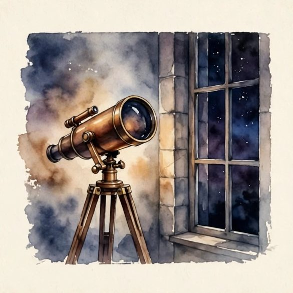
Two cloths lie beside the instrument: one folded and ready, one still holding last winter's dust.
Every telescope in the observatory is looked through, and everything it is looked through is, in the end, a lens of the keeper's own making. The lens of a good night's sleep. The lens of hunger, of haste, of an old story about what people like us may expect. An uncleaned lens does not announce itself; it simply tints the whole sky the color of its grime, and the observer, trusting the instrument, files reports about a universe that is — according to the log of that week — uniformly hostile, or uniformly indifferent, or permanently arranged against the house. The sky, consulted later through a cleaned lens, files a different report entirely.
The common smudges are known to every keeper and are listed at the desk without embarrassment. Fatigue is the thickest; it can make a friendly universe look like an inquest. Unfinished grief lays down a film that grays even the celebrations. Resentment is a scratch rather than a film — it distorts only what passes one particular point of the sky, which is how the keeper learns to suspect it: when exactly one star, and always the same one, is reported monstrous. And hurry, the mildest smudge, merely blurs — but a blurred universe is misread as a shallow one, which is its own quiet tragedy.
Cleaning, in the observatory's practice, is unglamorous work: sleep, food, a walk, a confession to a friend, an hour of doing nothing with both hands empty. No lens is cleaned by being argued with. The keeper simply builds the wiping into the liturgy of the place, the way the dome is swept and the log is ruled — not because the sky has been misjudged dramatically, but because it is being misjudged slightly, daily, and slight daily errors are how charts go wrong. Look again, the register advises, after the lens is clean. The universe you owe an apology to is usually the same one. It was waiting, patiently, behind your own weather.
65The Star Log
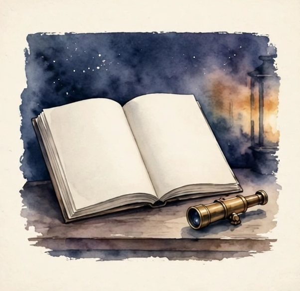
An open ledger lies under the dome, its pages ruled in a patient hand, most entries no longer than a breath.
The observatory's humblest furnishing may be its most consequential: the star log. It is not a diary, exactly, and not a ledger of accounts. It is the record the watcher keeps of the watched — a few lines, most nights, in a hand that has learned not to perform for posterity. What the weather was. What crossed the sky. Which old star was bright, which new one was sighted, what the tides did. The entries are short because the sky is long, and because the keeper discovered early what all log-keepers discover: the discipline is not in the writing. The discipline is in the showing up, night after ordinary night, to write.
What the log is for becomes clear only across years, which is precisely its design. A single night's entry can prove nothing; a decade of entries can prove the seasons. The keeper who logs discovers that the darkness they believed was one long night was in fact a series, with bright intervals faithfully recorded in their own hand and promptly forgotten by their discouragement. The log remembers what the mood cannot. It is the house's exterior memory, immune to weather, and many a keeper has been talked out of a false despair by nothing more eloquent than their own handwriting from a better October.
The desk offers the practice to any citizen willing to begin badly. The log does not require beauty, insight, or even honesty of a high order — it requires only dates and attendance, and lets accuracy accumulate on its own. Begin with the weather. Add one star. Forgive the missed nights without ceremony and resume without a speech. In time the book becomes what every observatory is finally for: evidence, in the keeper's own hand, that the sky of this one life was watched — attended to, accompanied, taken seriously as a universe. There are worse monuments. There are not many better ones.
66Looking Longer, Seeing More
The observatory's whole technique can be stated in four words, and the keeper states them to every new watcher without ornament: looking longer, seeing more. The first glance at any sky reports the obvious — the brightest star, the nearest cloud, the current emergency of light. It is the second hour that begins to tell the truth. Faint objects declare themselves only to sustained attention, the way shy guests speak only after the party has settled. A life's important faint objects — the slow change in a beloved's weather, the quiet ripening of one's own resolve, the grief finishing its work underground — are invisible to the glance and unmistakable to the gaze.
This is, the register concedes, an unfashionable instrument in a fast age. The glance has been industrialized; the gaze has not, because it cannot be. Looking longer costs the one currency no one can counterfeit, which is time spent in a single direction. But the observatory's accounts are plain about the exchange rate. The watcher who gives an evening to one corner of the sky goes home with a chart. The watcher who samples forty corners goes home with forty first impressions and a fatigue mistaken for knowledge. Depth is not a talent. It is what duration looks like from the inside.
There is a mercy folded into the method, and the hall would be incomplete without it. Looking longer is also how things are forgiven. The person watched briefly is a summary; the person watched long is a sky — phases, weather, dark matter and all. Even the self, given the long gaze, stops resolving into its worst single entry. So the keeper's instruction stands at the door of the observatory like a small brass rule: do not trust the first report of any sky, including your own. Sit down. Let the eyes adjust to the dark. The faint lights are already there, waiting for the only credential they recognize — a watcher willing to stay.
67The Night Shift of Noticing
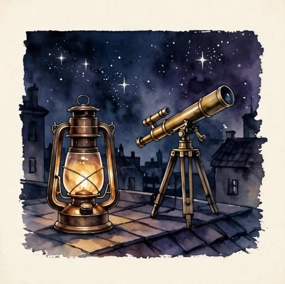
One lamp burns in the observatory all night, and the log beside it fills in a slower, rounder hand.
The observatory keeps hours that the rest of the house does not. There is a night shift of noticing, worked by the part of the keeper that stays awake — in the small hours, in the waiting room, on the long drive — while the official self is off duty. Much of a life's real astronomy is done on this shift. It is at three in the morning that the true magnitudes announce themselves: which worry was weather and which was climate, which love is load-bearing, which ambition was only ever a noise the day made. The night log is written in a slower hand, and the desk has learned to trust its entries disproportionately.
The keeper does not romanticize the shift; the register knows the small hours can be a hard posting, and that sleeplessness is a poor telescope with a shaking mount. But the same hours, on their good nights, offer the one thing the crowded day cannot: an unobserved sky. Without an audience — without even the audience of one's own plans — the watching grows honest. Regrets present themselves without costume. Gratitudes do the same. The night shift is where the census of the unseen is quietly taken, one corridor at a time, by a keeper who has stopped performing the census for anyone.
Morning, when it comes, is the shift's editor, and the observatory is grateful for the arrangement. Not everything the night reports survives the daylight audit, nor should it. But the desk's rule is to transcribe first and judge later, because the night shift's dispatches — exaggerated as they sometimes are — are never fabricated from nothing. Something was up there. Something crossed. The log holds both the sighting and the correction side by side, in different inks, and calls the pair of them knowledge. A house that keeps a night watch is a house that knows itself around the clock. And a universe known around the clock, the register concludes, is very hard to frighten.
68What the Telescope Cannot Do
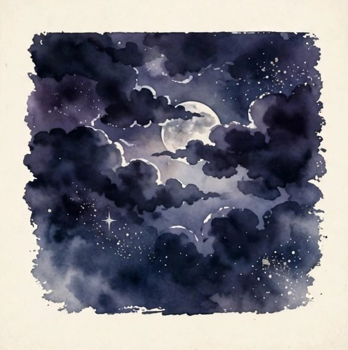
The telescope stands capped at noon, patiently useless, while the garden goes on shining at everything without distinction.
The observatory is proud of its instrument, which is why the register is scrupulous about its limits. The telescope cannot warm what it magnifies. It cannot hold the hand of the star it studies, nor be held by it. A keeper can achieve a perfect, decades-long observation of their own sky and yet discover, at the crucial hour, that watching was the rehearsal and not the play. The log has a name for the watcher who forgets this — the astronomer who dies of thirst beside a beautifully charted river — and it records the type with more sorrow than scorn, because the temptation is built into the instrument's excellence.
Nor can the telescope decide. It reports positions, magnitudes, weather; it does not cast a vote among them. The chart of a life, however accurate, will not say whether to stay or to go, to forgive or to file the grievance permanently, to spend the year on the work or on the recovering. Those are verdicts, and verdicts are issued downstairs, by the whole citizenry of the house, in the lit rooms, with the dome closed. The observatory serves the decision. It must never be permitted to replace it, or the house becomes a beautiful, well-documented paralysis — all sky, no orbit.
The final limit is the tenderest: the telescope cannot be pointed at itself, and so some part of every act of watching remains, by design, unseen by the watcher. The keeper accepts this the way sailors accept the blind spot in the mirror of the sea. It is why the observatory keeps friendships — other domes, other instruments, kindly aimed. What one sky cannot see of itself, another sometimes can, and the exchange of charts between keepers is among the oldest courtesies of the register. The instrument is mighty. The instrument is not sufficient. Both entries stand in the log, in the same ink, and the hall is wiser for the pair of them.
69A Steady Mount
Ask the keeper what makes an observatory trustworthy and the answer will disappoint the romantics: not the lens, not the dome — the mount. A telescope is only as honest as the steadiness beneath it. The finest instrument on a trembling pedestal reports a trembling universe, and the blame is misassigned nightly by watchers who do not know their own mount is loose. In a life, the mount is whatever the watching stands on: the routines that hold when weather comes, the body's basic treaties, the few commitments kept even — especially — on the days when keeping them feels like pure administration.
The register distinguishes a steady mount from a rigid one, because the difference decides whether an observatory survives its first earthquake. Rigidity is steadiness that has stopped listening; it holds the instrument at one angle forever and calls the limitation principle. A true mount is quieter and smarter. It absorbs the small shocks of ordinary days — the slight, the disappointment, the three a.m. dispatch — without passing them up the tube as false astronomy. And when the ground genuinely moves, as once or twice in a life it does, the mount's job is not to deny the motion but to give the watcher one honest place to stand while the chart is redrawn.
Building the mount is the least poetic work in the hall and the most repaid. It looks like sleep defended, meals kept, the log opened on the dull nights, the friend called back. Nobody writes odes to a pedestal. But the keeper testifies that every clear report the observatory has ever produced was produced on a steady one, and every wild misreading of the sky can be traced, in the end, to a week when the mount was neglected and the shaking was mistaken for stars. Set the stone deep. The looking is only as true as what the looking stands on — a sentence the register considers worth the whole science.
70The Dome Opens from Inside
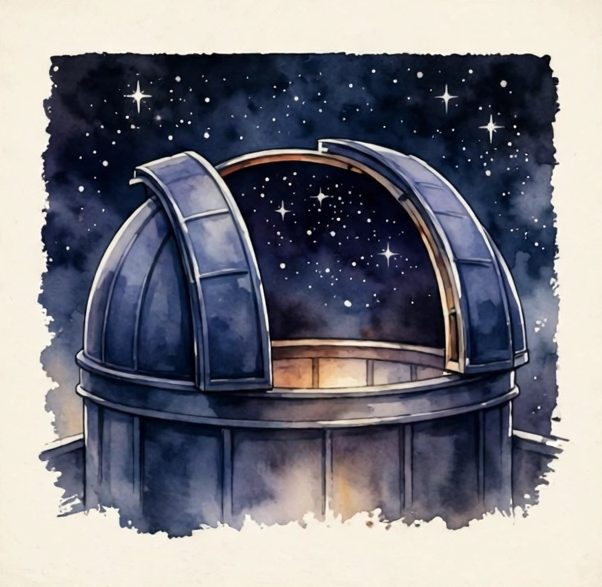
Above the observatory chair, the dome's two halves part on their rails, worked by a wheel no taller than a stool.
There is a detail of the observatory's construction that the keeper mentions to every visitor, usually at the door, on their way out, when it can do the most good: the dome opens from inside. No weather clears it from outside. No rescuer, no occasion, no audience can work the wheel. The mechanism is deliberately small — a hand wheel at the height of a seated person — because the observatory was built on the conviction that the opening of a life to its own sky is an interior act, repeatable nightly, and entirely unglamorous. One turns the wheel. The stars, which were there all along, become visible. That is the whole miracle, and it is enough.
The register notes how many keepers wait, instead, for the dome to be opened for them — by the right person arriving, by the circumstances relenting, by the verdict of the world finally coming in favorable. The log does not mock the waiting; the door of this hall is not a mocking door. But the observatory's finding, entered after long observation, is plain: the wheel is on the inside, and it has been on the inside the whole time, and the years spent facing the closed dome were not years in which the sky was absent. They were years in which the sky was unconsulted. The distinction has changed more lives at this desk than any other entry in the book.
And once opened from inside, the dome rarely stays shut for long; the mechanism, used, grows easy, and the watcher develops the astronomer's simple greed for clear nights. There will still be weather. There will still be seasons when the wheel freezes and must be coaxed. But the knowledge is permanent now, and it travels: whatever the next closed room turns out to be — the new grief, the new city, the new self assembling in the dark — its dome, too, will open from inside, by a wheel sized for one seated person, turning in the direction of the stars. The keeper closes the hall's second door with the log's most practical benediction: the sky is yours, and it opens toward you.
71Coordinates for One Life
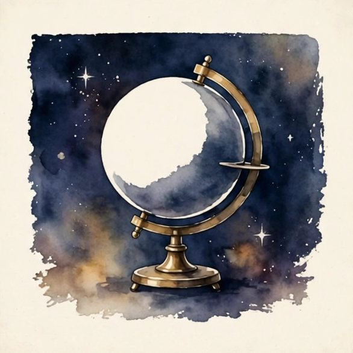
On the chart, among all the printed stars, one point is circled in red pencil and marked with nothing but a date.
Every chart in the observatory is drawn to a scale of one: one life, observed from inside itself. Coordinates for one life are not transferable, and the register is strict about this, because the borrowing of other people's coordinates is the most common navigational error in the book. A keeper plots their position by the lights actually visible from their own dome — the particular dead, the particular debts and gifts, the latitude of their circumstances — and the resulting chart, useless to anyone else, is priceless to its owner. The neighbor's north is a rumor here. The only true north is the one the local sky keeps offering, night after faithful night.
Fixing the coordinates is slower work than the young keeper expects. It takes seasons to learn which of one's stars are fixed and which are merely passing lanterns; which sorrows are weather and which are climate and therefore part of the address; what, exactly, the altitude of this life is — the height from which its choices are made. The log fills with corrections. Early charts are mostly erasure. But the observatory comforts its apprentices with the record: every keeper who stayed with the work arrived, eventually, at a chart they could steer by, and the arrival felt less like discovery than like recognition — the sky admitting it had been this shape all along.
The hall's use for coordinates is not self-absorption; it is the opposite. A keeper who knows their own position can finally be located by others — can say, accurately, where they are and what the weather is doing there, which is the beginning of every honest message ever sent between two lives. And a keeper who knows coordinates are personal stops issuing directions from their dome to other skies. The register's summary is brief enough for the margin: plot your own sky first. Give your position when asked, in your own units, without apology. It is the only address at which you can ever actually be found.
72The Keeper of the Observatory
At the end of the observatory hall, the register turns to the keeper — not the office but the person, insofar as the two can be separated at all. The keeper of the observatory is not the wisest citizen of the house, nor the strongest, nor the one the guests ask for. The keeper is simply the one who agreed to the rota: to climb the stairs on the ordinary nights, to rule the log, to clean the lens, to open the dome from inside and sit with whatever sky is actually there. It is an appointment made of attendance rather than talent, and the desk records that it has never once been given to the person who campaigned for it.
The keeper's virtues, itemized reluctantly in the log, are unfashionable ones. Patience with repetition. A nose for the difference between weather and news. The discipline to write it down unflatteringly and the mercy to write it down kindly, since the keeper knows the log will be read, in later years, by the only audience that matters and the harshest one available: the future self, at a different window, in a different season. Above all, the keeper keeps the confidences of the sky. What is seen from the dome is the house's own business, shared outward only as charts are shared between keepers — by consent, in pencil, with the coordinates left personal.
The hall closes with the register's standing invitation, extended to every citizen of every house: the post is not filled by election and it is never truly vacant, only sometimes unattended. Any keeper may take it up on any night, without credentials, by the simple act of climbing the stairs and opening the dome. The coat by the door will fit more shoulders than expected. Its pockets hold the whole equipment of the office — a pencil for the provisional entries, a cloth for the lens, and a key that fits nothing but this room. The sky, for its part, keeps its side of the rota. It is there. It is patient. It is, on the clear nights especially, worth every stair.
73Inner Seasons and Tides
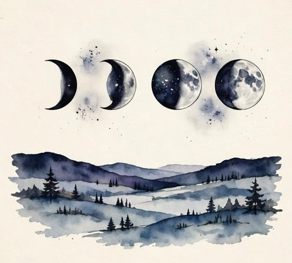
The observatory garden is planted in four beds at once, and something in each of them is always coming up or going under.
The last hall of this survey opens onto the cycles, because the keeper has learned that almost nothing in an inner universe moves in a straight line — it moves in seasons and tides. The energies of a life have their spring and their wintering, their flood and their ebb, and these are not malfunctions of an otherwise steady machine. They are the machine's actual design. The observatory's charts, kept across enough years, show the pattern too clearly to argue with: the same keeper, in the same house, is a different climate in February than in June, and both climates are genuinely theirs.
The practical consequence, entered in the log in the desk's flattest hand, is that a life must be governed seasonally or it will be governed badly. Work that belongs to the spring — beginnings, sowings, the spending of strength — is a cruelty when demanded of the winter self, and a waste when postponed past the summer. Rest that belongs to the ebb is not laziness; demanded at the flood, it is not virtue either. The keeper's art is calendar work: knowing which season is actually in progress behind one's own windows, whatever the world's calendar says, and setting the house's expectations by the true one.
There is a dignity in this that the hall wishes to underline before it proceeds. A person who understands their seasons stops apologizing for their tides. The wintering is not a failure of the summer; the ebb is not a betrayal of the flood. Each is the other's guarantee, written into the design of every living shore. So the register opens its book of cycles with the benediction it uses for all true things: observe, record, and govern accordingly. The seasons will not be hurried, and they will not be skipped. They can only be kept — well or badly — and a life, like a garden, is largely the sum of how its seasons were kept.
74The Moon I Go By
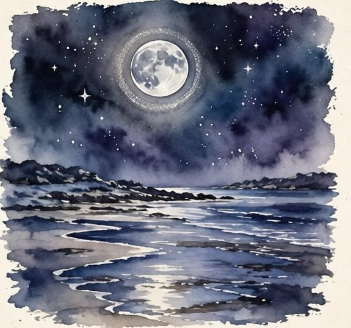
A tide table, hand-copied and much corrected, is pinned beside the observatory door where the boots are kept.
Earlier in this survey the keeper named the moon they keep — the private light of the night hours. This hall asks the plainer question: by which moon do the tides actually run? For every life has a governing rhythm not of its choosing: a cycle of energy and ebb laid down by the body's history, the work's demands, the heart's particular moon, whose pull arrives on schedule whether the calendar approves or not. The moon I go by may not be the moon I would have selected from the catalogue. It is simply the one whose phases my weather obeys, and the observatory's first law of cycles is to sail by the real one.
Identifying it takes the usual instruments: the log, the long gaze, a few years of honest entries. The pattern emerges the way coastlines emerge from a series of soundings — the bright fortnight and the dim one, the season of sociability and the season of the closed door, the hours of the day when the tide of the mind runs in and the hours when it reliably leaves the flats exposed. None of this is destiny. It is hydrography. But the keeper who has charted it stops scheduling their life against the water, and the saving of wasted force, compounded over years, is among the largest entries in the observatory's accounts.
There is a courtesy owed to other people's moons, and the register enters it here, in the tide hall, where it belongs. The beloved whose ebb arrives when our flood is in will look, to the uncharted eye, like indifference; the colleague in their winter will be misread as decline. The keeper who knows that every shore answers a different moon reads these weathers more mercifully — and, more usefully, stops demanding of others a tide their sky cannot produce on that day. We go by our moons. The log says it without heat. Learning one another's, over years, is most of what long love actually consists of.
75High Tide, Low Tide, Both Mine
The observatory keeps two portraits of every keeper, taken on the same shore: one at high tide, one at low. At high tide the boats are afloat, the harbor is generous, the self is expansive, articulate, equal to its correspondence and its callers. At low tide the same harbor shows its flats — the self becalmed, resources apparently vanished, the bottom of things exposed in an unflattering light. The young keeper prefers one portrait and hides the other. The old keeper, whose portraits these are, hangs both in the hall at the same size, in matching frames, because the log has taught the whole house the sentence that titles this room: both mine.
Low tide, properly observed, is not the truth about a life any more than high tide is; it is a phase with a function, and the function is partly revelation. What the ebb exposes — the actual state of the harbor floor, the wrecks, the lost anchors, the places where the channel has silted — can be seen at no other time. Keepers who refuse to look at their low water lose the only survey of their own depths they will ever be offered free of charge. The register advises a walk on the flats, notebook in hand, without self-pity and without flinching. The tide will do the covering again soon enough. It always does. That, too, is in the log.
And high tide has its own instruction, which is simply to be used and enjoyed without being believed in as a permanent condition. The flood is for launching — the difficult conversation floated, the work sent out, the visit paid, the joy spent while the water is in. A keeper who knows the cycle does these things at the flood without needing a committee to certify the feeling, and rests at the ebb without needing a tribunal to excuse the resting. The whole art, the desk concludes, is proprietorship: to claim both tides as one's own weather, one's own shore, one's own good harbor — and to keep the boats, in both portraits, unmistakably seaworthy.
The Observatory Desk
One desk receives all correspondence for this universe — questions, corrections, greetings, and word of skies you are learning to read. It is read in the order it arrives.
76The Wintering
The garden under snow is not empty; the beds are tucked, the tools are oiled, and the gate is shut with care rather than sorrow.
The wintering is the season this hall exists to defend. It comes to most lives sooner or later — the fallow stretch when nothing blooms on schedule, when the work will not flower, when the self withdraws to the root and keeps its own counsel underground. Observed from outside, a wintering looks like an ending, and the world, which judges by blossom, will say so at the door. The observatory, which judges by the log, says otherwise. The wintering is not the garden failing. It is the garden doing the part of its work that cannot be done in the light, at the pace roots keep, in the season appointed for it.
What happens in a wintering, the register records, is maintenance at the deepest level: the slow repair of what the bright seasons spent. The soil of a person is not improved by perpetual summer. It is improved by rest, by frost that kills the pests, by the long dark interval in which the self stops producing for an audience and returns to the private chemistry of becoming. Keepers who have wintered well describe it afterward with an odd gratitude, the way one speaks of a convalescence that returned more than it cost. Those who were prevented from wintering — hurried back to bloom by their own or others' alarm — describe something else, and the log keeps their entries too, as warnings.
The desk's counsel for the season is a short liturgy: keep the beds tucked, the tools oiled, the gate shut with care. Which is to say — let the life be simple, let the instruments be ready, let the boundaries be kind and firm. Do not sign contracts on behalf of the spring self. Do not accept verdicts delivered by visitors who only know the garden in June. The wintering keeper's whole task is custodial: to hold the place in trust for a season they cannot yet see, on evidence they cannot yet present. It is among the most faithful acts a person performs. And the log, which has recorded many winters, has never yet recorded one that was the last word.
77The Long Night, Kept Well
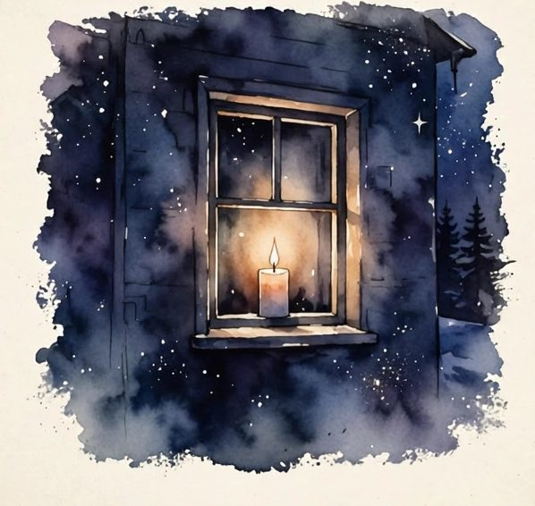
In the observatory, the longest night of the year is marked by extra lamps, a full kettle, and the log ruled ready.
Some nights in a life are longer than others in ways the calendar cannot explain, and the observatory does not insult them by pretending they are short. The long night — of waiting, of grief, of the vigil kept beside a door that may not open — is a real season, and it deserves better counsel than cheerfulness. This hall offers the only counsel the register trusts for it: a long night can be kept well. Not enjoyed, not shortened by argument, not explained into daylight. Kept — the way a watch is kept, the way a house is kept — by attendance, by lamplight, by the refusal to abandon the post.
Keeping a long night well is a craft with learnable parts, and the log lists them without romance. Make the watch small: this hour, then the next; the night is crossed in single hours and never in bulk. Keep the instruments humble — the kettle, the log, the letter finally written, the star chart of what is still true. Expect the three a.m. dispatches and file them under night prices, to be audited at dawn rather than obeyed at cost. And keep company where company can be had, even at a distance, even by lamplight through a window: the observatory has never required its keepers to watch alone, only to watch honestly.
The register's confidence about long nights is not optimism; it is archive. The log contains, in the keeper's own hand, the endings of nights that at their midpoint were indistinguishable from permanent. Dawn, in those entries, is never described as a rescue. It is described as a schedule — the oldest and most reliable one the universe keeps. So the hall closes its vigil with the plainest comfort the desk owns: nights end at the speed they end, and the keeper's honor is in the keeping, not the hastening. The lamp is lit. The kettle is on. The log is ruled and ready. And somewhere east of every long night ever recorded, without exception in the archive, the light is already on its way.
78Spring Is a Local Event
When spring returns to an inner universe, it does not arrive as a general announcement. It arrives locally — one bed greening while the rest of the garden is still locked in frost, one corridor of the house warming while the others keep their winter. The observatory insists on the precision because so much despair is manufactured by the comparison of calendars: the neighbor's whole estate in bloom, one's own spring apparently cancelled. The log knows better. Spring is a local event, scheduled per garden, per bed, per buried thing, and it has never once consulted the neighbors about its timing.
The first green is easy to miss, and the keeper misses it at the usual cost of looking for the wrong evidence. Spring in a life rarely announces itself as joy. It arrives as a small resumption of appetite — the book picked up again, the walk lengthening by one street, the letter answered that has waited all winter, a joke landing for the first time in months and being, to everyone's surprise, funny. These are not the recovery; they are its soundings, the first water moving under the ice. The wise keeper marks them in the log with the observatory's smallest and most hopeful notation: a star in the margin, and no conclusions drawn aloud.
What the hall asks, finally, is protection for the local spring. Do not demand that the one green bed justify the whole garden's winter, and do not trample it with celebration's heavy boots. Tend it at its own scale. Water the thawing corner, keep the gate as it was, let the rest of the estate come up in its own order — for the log is certain on this point, having watched it across more years than any discouragement can argue with: the greening spreads. A spring that has begun anywhere in a life has begun. And the keeper who has learned to recognize it small will never again mistake a local April for nothing, which is the mistake this hall was built, above all, to prevent.
79The Tide Does Not Apologize
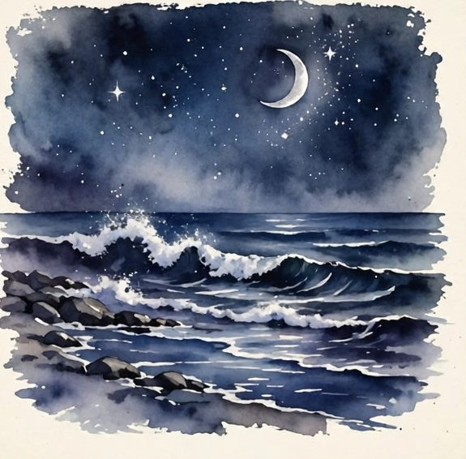
The sea withdraws from the harbor steps at its appointed hour, leaving them clean, wet, and entirely unembarrassed.
There is a sentence the observatory wishes it could deliver to every keeper at the start of their first ebb: the tide does not apologize. It goes out without a memorandum. It does not consult the boats about their feelings, nor the harbor about its appearance, nor the visitors who arrived expecting water. Its whole authority is that it is the tide, doing what tides are, and it returns on the same terms — without triumph, without commentary. The register holds this up not as indifference but as instruction, because a person's energies, observed honestly, obey the same law, and a great deal of human misery is the sound of a tide apologizing for being a tide.
The apologies are itemized in the log, in hands young and old: for the quiet month, the unanswered season, the room one could not keep bright, the self that was not available at flood because the water, that year, was simply out. Each apology presumes a court — an audience entitled to a permanently high harbor — and the observatory's finding, after long observation of such courts, is that they do not exist outside the keeper's own fear. The actual beloved, the actual work, the actual life: these are shores, not courts. They have seen tides before. They keep their footing at the waterline and wait the way shores wait, which is to say, without keeping score.
So the hall's counsel is to retire the apology and keep the information. Say, if it must be said, simply: the tide is out; it will be in again on its schedule; the harbor is mine and I am keeping it. This is not coldness. It is the dignity of a natural fact, stated once, in a level voice, by a keeper who has stopped litigating their own weather. The boats rest on the sand and are not ashamed. The steps dry in the sun and are not ashamed. And the sea — the great teacher of this whole hall — withdraws and returns, withdraws and returns, owing no one an explanation for either motion, and beloved, in the end, for exactly that reliability.
80Seasons I Resisted
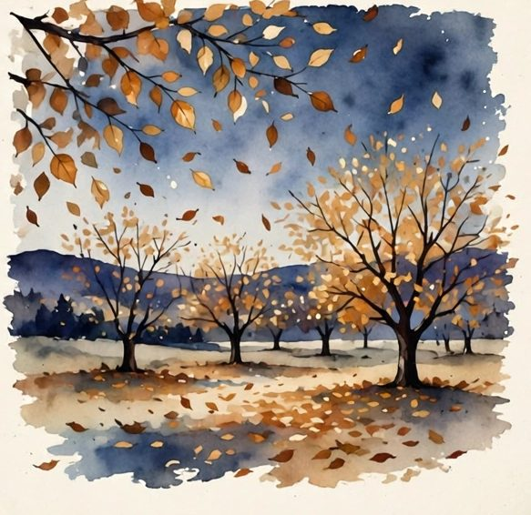
An old chart in the log shows a winter crossed out three times in pencil, and beneath it, in the keeper's later hand: it came anyway, and it was needed.
The hall of cycles closes with a confession the keeper enters without prompting: the seasons I resisted are, in the later hand of the log, nearly all the seasons that taught the house anything. The winter was resisted as an insult to the summer's reputation. The ebb was resisted as a public relations failure. The long night was resisted with lamps, with company, with noise — every instrument of refusal the observatory owns. Each resistance was understandable, each was expensive, and each ended the same way: the season kept, at last, on worse terms than it offered at the door, by a keeper too tired from the argument to learn it properly the first time.
The register is gentle with the resistor, who is after all every keeper who ever lived. Resistance is rarely foolishness; it is usually loyalty wearing the wrong coat — loyalty to the bright season, to the self who was competent in it, to the story in which things were proceeding correctly. The winter asks something harder than suffering: it asks for the surrender of that story, at the door, in exchange for nothing visible. Small wonder the house negotiates. But the log's long record suggests the negotiation is the suffering, and the season itself — entered plainly, kept honestly — is frequently gentler than its reputation at the gate.
So the hall's last counsel is the smallest in the whole survey and the one the keeper underlines: let the season in when it knocks. It will bring its own provisions, which are never the ones ordered and are often, in the later accounting, the ones required. The winter that was resisted for years, admitted at last, turned out to contain the rest on which the next decade was built; the ebb, admitted, was the survey of the harbor floor that made the flood years safe. The chart keeps every crossing-out, and beneath them all, in the hand the keeper hopes to grow old into: it came anyway, and it was needed. The seasons, the log concludes, are not the interruption of the life. They are the life, arriving in order.
81The Solstice I Noticed
Every inner universe keeps a solstice, though very few of us keep its date. It is the day the long darkening quietly stops — not reverses with any ceremony, only stops — and almost nobody is watching the instruments when it happens. The Observatory Keeper marks such days in the register in pencil rather than ink, because they are easy to miss and unwise to celebrate too early. A person can live a whole season past their solstice still dressing for deepening winter, still rationing the lamplight. But the log, kept honestly, shows it plainly enough: today the light held its ground, for the first time in months. Holding is where all returning begins.
To notice a solstice is a modest skill, and the estate recommends it over grander ones. It asks only that you check, now and then, whether the dark is still gaining. Often it is not. Often the worst has already crested, somewhere behind you, unmarked, while you were busy bracing for more of it. The grief, the fear, the long grey weather of a hard year — these have their turning days as surely as the sky above the roof does. A solstice is not the victory and does not pretend to be. It is the surveyed fact that the trend has quietly changed its mind.
The Keeper does not fire a salute on such a day, and neither should you. The correct observances are small ones: a note in the margin, a slightly longer look out of the dome, perhaps the good cup taken down from the shelf. The light will not hurry because you noticed it; it keeps its own ancient schedule. What changes is the keeper. A person who knows their darkening has stopped walks differently through the remaining dark — less braced, more curious, saving strength for the season instead of spending it on dread. The light returns the way it left: by minutes, in silence, to those who kept the log.
82When the Light Returns Early
Dawn arrives ahead of schedule over the quiet fields of the mind, and nobody complains.
Sometimes the light comes back before the calendar said it would. A laugh returns before you felt properly ready for it. A morning arrives carrying energy you had not budgeted for, like a guest who appears an hour early and turns out to be the best company of the year. The Observatory Desk receives these events without suspicion, though it once shared the common superstition that recovery must keep office hours. The register is corrected now. Light keeps no timetable but its own, and its early arrivals are entered in the same ink as its late ones.
Early light can unsettle a careful keeper. Is it real, the inner auditor asks. Will it last. Am I permitted to use it before it has proven itself. The estate's counsel is unfashionably plain: receive it at face value. Sit in the bright morning without cross-examining it. A lamp lit for one evening is still a lamp, and the room it lit was lit in fact, whatever tomorrow's weather decides. The register permits pleasure to be taken on credit against nothing at all. Gratitude that demands guarantees before it will begin is not gratitude; it is accounting wearing a nicer coat.
There is one caution the Desk does attach, and it is a gentle one. Early light is not a command to cancel the winter stores or to promise the summer's schedule in April. Enjoy the thaw; keep the woodpile. The keepers who fare best with early light are those who treat it as weather rather than as verdict — welcome, usable, and no more required to be permanent than any other fine day. The Desk enters such mornings twice in the log, once for the light and once for the keeper's willingness to use it. Use the light while it is in the room, and let tomorrow file its own forecast.
83Harvests of a Quiet Year
Baskets come in from small fields no visitor ever saw, heavier than they look.
Not every year is a vintage year, and the inner estate does not pretend otherwise. Some years produce no triumphs the neighbors would recognize: no new wing, no famous vintage, nothing to announce. But the Observatory Keeper walks the small fields in autumn anyway, and the baskets come in heavier than they look. A quiet year harvests differently. Endurance, ripened slowly. A friendship kept in repair. None of it is announced in the village square, and none of it requires an audience to be real. One old fear outgrown so gradually that nobody, including its owner, can name the day it was left behind.
The danger of a quiet year is not its quietness; it is the keeper calling it an empty one. Comparison does this damage — the loud harvests visible over the fence, the other estates bottling their celebrations. Against this the register offers its plain accounting. What did this year store. Patience, in quantity. Judgment, refined by having less to spend it on. The ability to sit overnight with an unsolved thing and not rattle its door. These are not consolation crops. They are the stores that loud years draw on and quiet years lay down.
The estate therefore enters the quiet year in the ledger without apology and without asterisk. Its yield will not photograph well, and it will feed people — beginning with its own keeper, in some later winter when the stored patience and the practiced calm are exactly what the season demands. A household that only values its noisy abundance will starve in the first hard year, having eaten its stores as seed. The Keeper closes the barn door on such a year with more respect than on many a celebrated one. A quiet year feeds a loud decade, if somebody bothered to bring in the crop.
84The Calendar No One Prints
Inside every person hangs a calendar that no one prints. Its dates are real and its authority is considerable, yet it appears in no stationer's shop. Here is the anniversary the world does not know about. Here is the month when energy reliably thins, and the week in spring when it returns like water to a well. Here is the private season of missing someone, arriving on schedule every year whether it is welcomed or not. The Observatory Keeper keeps this calendar in pencil on the dome wall, and consults it more often than the printed one.
The printed calendar governs appointments; the unprinted one governs capacity, and wise administration consults both before making promises. A keeper who knows their own Marches and Novembers stops being ambushed by themselves. The flat week stops reading as a character flaw and starts reading as a date — known, recurring, survivable, already survived a dozen times. The dates, once known, can even be defended in advance — cleared of obligations the way a groundskeeper clears a path before the frost. Even grief keeps better hours once it is on the calendar: expected, given its chair, and permitted to leave when its visit ends rather than moving into the house.
The Keeper recommends, as an exercise in self-government, that the calendar be written down at least once — privately, in whatever code the owner prefers. Not to organize the feelings; feelings decline to be organized. Simply to know the terrain of one's own year the way a groundskeeper knows the frost pockets of a garden. What is mapped can be prepared for, and what is prepared for loses most of its power to frighten. The calendar hangs in pencil because seasons drift a little with the years, and the Keeper prefers an honest smudge to a confident error. Know your own seasons, and you will stop apologizing for your weather.
85Collisions and New Stars
Two bright bodies meet in the dark of the inner sky, and the charts must be redrawn.
This hall of the universe is not a tidy one, and the estate will not pretend that it is. The sky inside a person is not a museum of fixed lights; things move, and moving things meet. Collisions are the register's word for the arrivals that cross a life's trajectory at speed: the event, the person, the loss, the sudden fortune that does not ask permission of the existing arrangements. The dome above the Observatory Desk has survived several such impacts. Their marks are kept polished rather than hidden, the way old houses keep the scars in their beams.
What the long-poetic knowledge of the sky teaches — and this page claims no more science than that — is that collisions are also how new things get made. Moons, in the old stories of the heavens, are wreckage that learned to orbit. Stars are lit by matter falling together. The inner sky keeps the same double truth. The disruption that ends an arrangement often scatters into orbit the very pieces a calmer decade could never have moved: a truer loyalty, a necessary ending, an unsuspected talent found glowing in the debris.
The Keeper's instruction for this hall is therefore neither flinching nor celebration, but sequence. First, acknowledge the impact; the estate does not file collisions under 'nothing happened.' Second, wait for the dust to show its pattern before redrawing the charts in ink. Third, when the new light appears — and in the register's experience it does — enter it without insisting it resemble what was lost. The dome, after all, is not a monument to a sky that never changed; it is a workshop for a sky that changes constantly. Nothing in a living sky stays unstruck forever; the question is only what gets built from the bright wreckage.
86When Worlds Collide
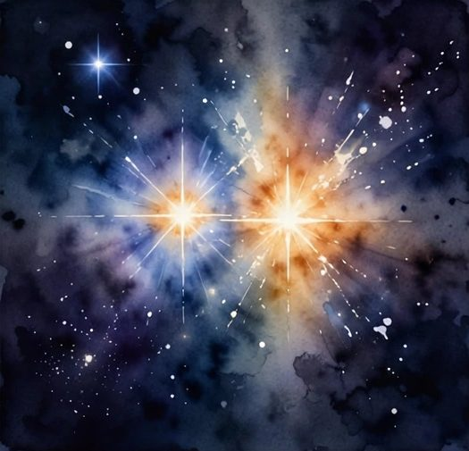
Two whole weathers meet at one border, and both skies change their forecasts.
A world, in this register, is a whole arrangement: one person's habits, loyalties, seasons, and unprinted calendar, bound together into a working sky. It follows that when two people truly meet — marry, build, feud, raise a child, share a house or a grief — it is not merely two moods that encounter each other. Worlds collide in earnest. Each arrives with its own gravity, its own weather, its own list of what is normal, and the collision is simply the name for the long moment when those arrangements begin to negotiate.
The friction of it is not failure, and the Observatory Desk wishes this entered plainly. Friction is what contact feels like from inside. Each world must give up its claim to be the only sky, and that surrender is genuinely uncomfortable — the holidays rearranged, the silence interpreted wrongly, the winter of one partner arriving during the summer of the other. Some collisions do wreck a world; the register does not deny the casualties. But far more of them grind both worlds, slowly and with sparks, into truer shapes than either would have managed alone.
The keepers who navigate such meetings best share one habit: they do not demand that the other sky adopt their stars. They learn the foreign weather. They mark the shared border in pencil and renegotiate it seasonally, without treating each revision as a betrayal of the first treaty. A world that cannot be revised cannot be shared, and a world that cannot be shared will spend its brilliance alone. The estate keeps a small stock of spare pencils at the border for exactly this purpose. No world enters another's sky and leaves its own unchanged — that is not damage; that is contact.
87The Star That Ended
Every long-kept sky has an absence in it. Somewhere in the familiar pattern there is a place where a light used to be: the star that ended. It may have been a person, now gone. It may have been a vocation, a city, a faith, a version of the keeper themselves — someone they were for twenty years and are not anymore. The Observatory Keeper does not paint over the gap or promote a lesser light into its position. The chart keeps the coordinates, marked with the small, respectful notation the register reserves for such entries: was here; mattered.
An ended star teaches the difference between presence and influence, which are not the same thing and never were. Its light organized the neighboring sky for years; plans were navigated by it, seasons were timed to it. That organization does not evaporate when the light does. The pattern still bends around where the star was, the way a household still sets its rhythms around a chair no one sits in. To say the star ended is accurate. To say it is finished acting on the sky is a beginner's error, and the register underlines the correction twice.
The Keeper's counsel for this room is custodial rather than consoling: keep the coordinates. Visit the gap occasionally, without demanding it either refill or stop aching on schedule. Absences, properly kept, become part of the estate's dignity — proof that the sky was large enough to lose something real. A universe with no gaps in its chart is either very young or not being honestly surveyed. Some keepers leave a chair for the ended star at the table of the year, and find, to their surprise, that the gesture steadies rather than saddens them. A star can end and still be part of the map by which you navigate.
88What a Supernova Leaves Behind
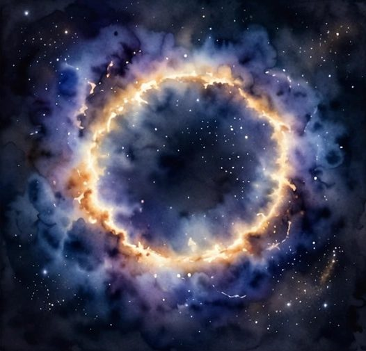
Where the great light burst, a slow bright mist is still expanding into new shapes.
Some endings are not quiet. A supernova, in the inner sky, is the sudden and brilliant collapse of something that had seemed load-bearing and permanent: a marriage, a faith, a career, a self built carefully to last. For a while it outshines everything else in the universe. It is all the keeper can see, and all anyone asks about, and its light is not gentle. The Observatory register has pages from such years that are difficult to read and impossible to skip. The estate does not hurry anyone through this room.
But the Desk's long view is interested in aftermaths, and the aftermath of a great collapse has a property worth recording. What is left behind is not nothing. It is an expanding cloud — and in the poetic chemistry of the sky, such clouds are rich. The experience scatters materials through the whole inner universe that did not exist in the keeper before the heat of it: a compassion with calluses on it, a discernment that cannot be flattered, a flat refusal to spend years on what does not matter. These arrive slowly, mixed with dust, and are easy to miss while the eye still aches from the brightness.
Years later, surveying, keepers are often startled by the inventory. The capacities they now steer by — the ones friends remark on, the ones that hold in bad weather — trace their manufacture to the explosion they would never have chosen. The estate draws no moral that the collapse was 'worth it'; the register forbids that arithmetic. It records only the fact, which is enough. The cloud keeps expanding, year over year, and the keeper keeps finding new material at its edges, like a beachcomber on a generous shore. What breaks at full brightness does not vanish; it seeds the whole sky with what it learned.
89New Elements, Forged in Heat
In the hottest room of the universe, plain matter comes out changed and useful.
The old poetic knowledge of the stars includes one fact the estate returns to often: the heavy, useful elements are not made in comfort. They are forged in the furnace — in pressure and heat no mild process can supply. The inner universe keeps the same honest chemistry. Certain capacities exist in a person only on the far side of heat. Patience, hammered out under a pressure that would not relent. Tenderness, formed in the crush of a loss that rearranged the keeper's whole table of values. Courage, which is not manufactured anywhere except in the presence of the thing feared.
The Keeper is careful here, and the register insists on the care: this is not praise of suffering. Heat also destroys, and furnaces are not owed gratitude for existing. The point is narrower and more practical. When a hot season has already happened — when the pressure is a fact in the log and not a theory — the wise keeper conducts an inventory before cursing the furnace outright. What came out of that season changed. What is in the stores now that was not in them before. The inventory, honestly taken, surprises nearly everyone who takes it.
These forged elements have a distinguishing mark: they do not rust in ordinary weather. The patience made in heat does not evaporate in a queue; the tenderness made in loss does not curdle at the first ingratitude. They are, in the estate's phrase, the load-bearing materials of a mature sky — unglamorous, unshowy, and precisely what the next structure will be built from. They are also, the Keeper notes, the hardest elements to counterfeit; no one has ever successfully faked the patience that heat produces, which makes it recognizable anywhere. You are partly made of what your hardest seasons manufactured; spend those elements well.
90The Debris Field, Honestly Surveyed
After any collision there is a debris field, and it does not clear on request. The fragments are familiar to every keeper: a sentence that cannot be forgotten, drifting. A plan half-built and cooling. A loyalty still in orbit around something that no longer exists. The Observatory Desk's first instruction for this room is unfashionable and absolute: survey the field honestly before attempting to tidy it. Most of the damage done after a collision is done by keepers who announced, too quickly and too loudly, that there was no debris at all.
Honest surveying is a discipline of proportions. Each fragment gets its true size — not exaggerated into a catastrophe, not minimized into a joke. Most debris, the register notes, is harmless in orbit; it will circle, cool, and eventually be forgotten by everyone including the sky. A few pieces need retrieving, because something valuable is still attached to them. One or two need the opposite courtesy: to be deliberately allowed to burn out, watched without flinching until they finish. None of them benefits from being entered in the log as 'nothing,' which is the one description debris never deserves.
The survey takes time, and the estate budgets for it without embarrassment. A keeper who schedules the survey — walks the field at the dome's pace, tags what is found, decides later what anything means — recovers something more valuable than speed: trust in their own instruments. The next collision, when it comes, will frighten them less, because they will know the procedure and know it works. The survey is then filed, not framed — a working document, consulted rather than commemorated. A surveyed sky is a safer sky; it is the unnamed wreckage that catches a traveler by surprise.
The Observatory Desk
One desk receives all correspondence for this universe — questions, corrections, greetings, and word of skies you are learning to read. It is read in the order it arrives.
91A Star Is Born from a Collapse
In the darkest pocket of the inner sky, matter gathers, warms, and quietly catches light.
Of all the sky's stories, this is the one the estate loves best, and it is poetically true: stars are born when a dark cloud collapses under its own weight. The falling-in is not the opposite of the shining. It is the mechanism of it. Matter gathers, the gathering warms, and one ordinary point in the dark crosses a threshold and begins, unmistakably, to give off light. The Observatory Keeper has entered this in the register many times, in many hands' worth of circumstances, and the pattern has never once failed to command the room's attention.
The inner sky keeps the same plot. A plan caving in. An old life contracting — the house quieter, the ambitions smaller, the map folded to a single county. From outside, and often from inside, it reads as pure diminishment. Sometimes it is. But sometimes it is the gathering: everything the keeper is, drawn closer together than comfort ever drew it, warming at the center. The new star that results rarely resembles the old lights. It tends to be smaller at first, and truer, and lit on a fuel the earlier sky never had.
The Keeper's counsel is patience, and it is specific patience: do not judge a collapse in its first season. The dark pocket where stars form is not photogenic; nothing about it announces what is coming, and the warming is invisible for a long while before it is anything else. Keep the dome open. Keep the log. Refuse the cheap verdict in both directions — neither doom nor forced cheer. Do not curse the contraction of an old life until you have checked whether something in it is warming toward light.
92Light from a Dead Star Still Arrives
An old light crosses the dark and lands, this evening, on a present face.
The light by which we see the distant stars left them long ago — in the deep cases, before the watcher was born. Some of it arrives from sources that have already ended, traveling faithfully through the dark to land on an evening it was always aimed at. The inner universe runs on such delayed light, and the Observatory register gives it a whole category of its own. A teacher's sentence, unremarkable when spoken, arriving with full force thirty years later. A parent's kindness understood only after the funeral, and then understood completely, in one ordinary afternoon.
This delayed light is among the sky's governing mercies, because it means that what was given is not finished giving. The register files these arrivals under income, not under memory. Memory is what the keeper keeps; this is what keeps arriving — unrequested, unscheduled, addressed to whoever the keeper has since become. A word of encouragement planted in a discouraging year may do its real work in a decade its speaker never saw. The estate finds this fact quietly load-bearing. It holds up the whole practice of saying the true and kind thing without evidence that it landed.
The corollary, which keepers are asked to sit with, runs in the other direction as well. You are, at this moment, emitting light whose arrivals you will never witness — into skies whose charts you will never read. This is not a reason for grandeur; it is a reason for care with the ordinary transmissions: the casual sentence, the offhand dismissal, the unconsidered kindness. All of them travel. The Observatory therefore treats every departing light as still in transit, and every arriving one as possibly ancient. Gone is a direction, not a distance; love keeps traveling after its star has set.
93Making Peace with the Impact Crater
Some collisions leave a crater, and the crater stays in the landscape. It is a visible record with a rim you can stand on: here is where the thing hit — the year, the loss, the blow that redrew the local geography in an afternoon. Making peace with it, the Observatory Keeper wishes recorded, does not mean filling it in. It does not mean landscaping it into a feature and selling tickets. It means the keeper stops requiring the ground to pretend the impact never happened, and stops requiring themselves to perform the pretending.
Craters, honestly kept, develop their own ecology. They hold rainwater when the flat years run dry. Their rims shelter new growth from the prevailing wind. More than one keeper, surveying at dusk, has discovered that the tenderest things in the whole estate are growing in the crater, in soil that nothing else would have broken open. None of this redeems the impact, and the register does not ask it to. It only notes that a crater is a landform, not a life sentence — terrain to be known, crossed, and eventually crossed without ceremony.
The peace, when it comes, is quiet and mostly administrative. The path that once detoured a mile around the rim now goes over it, because the keeper's errands lie that way and the ground, after all, is only ground. Some years the anniversary is still observed. Most years it is not, and that too is allowed. Visitors occasionally ask why the estate does not fill the crater in, and the Keeper answers that a filled crater is only a lie with grass on it. The crater is not where the story failed; it is where the ground remembers for you, so your hands are free.
94The Sky Rearranges Itself
Overnight, without permission, the familiar pattern stands in a new arrangement.
Given enough seasons, the whole sky rearranges itself. The star that organized everything drifts toward the edge of the chart. A minor light, long treated as decoration, quietly becomes the pole star by which the keeper actually steers. Constellations that had names dissolve their partnerships; new figures, unconsidered for decades, stand up in the dark and introduce themselves. The Observatory register treats this not as an emergency but as the sky's normal behavior across a lifetime — the heavens inside a person are no more finished than the ones outside the dome.
Rearrangement frightens navigators, and understandably. The old chart was earned; it cost collisions and winters to draw. To watch it loosen can feel like losing the universe itself, and keepers have been known to grip the chart the way one grips a railing. The Desk's reassurance is archival: the register holds many skies per keeper — the chart at twenty, unrecognizable at forty; the chart at forty, a period piece at seventy. Each was true in its tenure. Each was complete. None was the final edition, and none needed to be.
So the estate's instruction is to hold the pencil loosely and the dome open. When the pattern shifts, redraw without resentment and without pretending the new arrangement was the plan all along. The stars have not betrayed the keeper; the keeper has outlived a chart, which is what charts are for. Nor should the keeper apologize for the redrawn chart, as if loyalty required navigating by stars that have moved. Loyalty, in this building, is owed to the sky and not to any single edition of its portrait, however beloved the portrait or however hard it was to draw. You are not losing your sky when it rearranges; you are being issued the next one.
95Nothing Collides Without Changing Both
Two weather systems part after meeting, neither carrying its original forecast.
There is a law of the inner universe that the Observatory register has entered without a single exception on file: nothing collides without changing both. The great meetings change both worlds greatly, as an earlier room described. But the law holds at every scale. The brief encounter — the stranger's remark on a train, the book read in one week of one summer — leaves trajectories adjusted by a degree or two, and a degree or two, compounded over a lifetime's travel, is the difference between one destination and another entirely.
This counsels two humilities, and the Desk presents them as a matched pair. The first is gentleness toward others: you are, whether you applied for the position or not, a collision in other people's skies. Your weather arrives in their universe with real force behind it, and the offhand sentence of a tired afternoon can be the impact some stranger's register is still charting. The second humility is steadiness toward oneself: being changed by an encounter is not the same as being harmed by it. Change is the receipt proving contact occurred. Only untouched things are unaltered, and untouched things are not in the register at all.
Keepers who absorb this law stop asking the impossible question — how to meet the world without being affected by it — and start asking the workable one: what shall this meeting make of me, and what shall it make of them. The estate can offer no formula for the asking, only the assurance that the asking itself is most of the craft. The estate makes no attempt to soften the law; it only points out that a law of mutual change is also a law of mutual significance. Every meeting is an exchange of weather; leave other skies better than the forecast you found.
96Room for One More Star
Beneath many endings there sits a fear that is really arithmetic. The sky is full, the fear says. The chart has no blank corner left. To love again, build again, begin again at this late date would require evicting something already shining — and the keeper, loyal to the existing lights, quietly declines the whole transaction. The Observatory Desk has audited this fear against the register's long evidence and reports its finding without adornment: the arithmetic is wrong. The sky has never once, in any recorded universe, refused an arrival on grounds of fullness.
The universe's standing answer to the fear is expansion, and it operates by addition rather than replacement. A new light does not demote the old lights; the pole star does not resign because a bright stranger has been entered in the margin. The register's happiest pages record the late arrivals — the friend found at sixty, the talent woken at fifty, the whole second constellation assembled in what was supposed to be the epilogue. In every case the keeper reported the same surprise: the sky did not feel crowded. It felt, if anything, underpopulated all along.
So this hall closes with the Desk's simplest standing offer, addressed to any keeper hesitating at the dome door with a new light in their hands: bring it in. Enter it in the register. Give it a season before asking what it is for. The estate has seen this done at every age and in every weather, and the result is entered in the same hand each time. The welcome, once issued, is not withdrawn if the new light takes time to brighten. The sky is not a shelf with fixed places; it is a sky, and it makes room by being one.
97Step One: Look Up, Inward
The dome's shutter opens one notch, and a person sits still for the first look.
The steps begin with the smallest possible act, and the estate insists it remain small. Sit down somewhere unremarkable — a chair, a step, the edge of a bed — and give yourself a few unhurried minutes. Then do the inner equivalent of looking up: turn your attention toward your own sky, the way you would toward the night above a field, and simply see what is there. One bright thing. One dim patch. One area of weather you cannot yet read. That is the entire assignment. Nothing needs to be solved before it has first been seen.
Most people discover, at this step, that they have been living under their sky for years without once looking at it directly — checking in on it only during emergencies, the way one visits a relative only in hospitals. The step repairs nothing and changes nothing, which is precisely its power. A keeper cannot tend a universe they will not look at, and looking, it turns out, is most of tending. If the sky seems blank at first, that is weather too. Stay the few minutes anyway. The eye adjusts on its own schedule.
Do this once, and the Observatory will count it a beginning; do it most days, and it becomes a practice — the dome opened a notch each evening, the register's first honest line. No equipment is required beyond a chair and a small refusal to be hurried. The whole discipline of the inner universe, all eleven steps that follow, is commentary on this one. Keepers who began with nothing more than this report, in their later registers, that everything else they know arrived as footnotes to the first honest look. The whole practice begins with a single unhurried look; every chart in the observatory started that way.
98Step Two: Learn Your Brightest Stars
On a plain chart, three bright points are circled in pencil and given their true names.
The second step is an act of naming. From the sky you surveyed in step one, identify your brightest stars — the few sources that give your universe its steadiest light. A person. A piece of work. A place, a practice, a belief you actually hold at three in the morning. There will usually be three to five of them, no more, and the Observatory suggests writing them down in plain words on a real piece of paper. Brightness, here, is not fame or drama. It is the light you would steer by if the weather closed in, because in fact you have.
Learn them the way navigators learn their stars: well enough to find them quickly, from anywhere, in partial cloud. This means knowing not only that they shine but when they rise — which season of your life each one governs, what obscures it, what it costs to keep it in view. A keeper who has done this step stops being surprised by their own resilience. They can name, in advance, exactly what will hold. They can also name what is not a star at all but merely a bright distraction, and the distinction saves whole voyages.
The chart is private and the pencil is deliberate. Stars get re-circled across a lifetime as the sky rearranges; the step is meant to be repeated, not aced. What matters is that at any given time the keeper can answer the plainest question in the register: what is your light. The exercise repays a quiet evening once a year, no oftener and no seldomer, like the servicing of any instrument the keeper depends on. A star misidentified is not a tragedy; it is a correction waiting for its season, and the chart, being pencil, is built to receive it. A person who can name their brightest stars is never entirely lost, even under cloud.
99Step Three: Check the Weather Without Judging It
The third step is a morning discipline of one question: what is the weather in me today. Answer it the way a forecast answers — in plain, uncharged terms. Tired, with bright intervals. Low pressure, storm likely by evening, clearing tomorrow. Grief moving through, slow front. Energy high and a little wild. The Observatory Desk is strict about the tone of this report. It is a reading of instruments, not a verdict on character. Rain is not a failure of the sky, and a keeper who files it as one will soon stop reporting honestly, which is how instruments fall out of calibration.
The usefulness of the step is embarrassingly practical. A keeper who knows the day's inner weather dresses for it: schedules the hard conversation outside the storm band, gives the low-pressure afternoon to low-pressure work, does not sign anything permanent at the height of a gale. Most self-management, the register has found, is not self-improvement at all. It is wardrobe. The weather itself changes on its own schedule and largely ignores our opinions; what we control is whether we are caught in it wearing the wrong coat for the third week running.
Keep the report brief and daily, and let some days' entries be a single word. Over months, the accumulated forecasts become the unprinted calendar from an earlier hall — the keeper's own seasons, visible at last as seasons rather than as surprises. The Desk is unembarrassed about the smallness of this step; most of astronomy, it observes, is the patient recording of ordinary skies. A keeper who has filed ninety honest mornings knows more about their universe than one who has written a single magnificent essay about themselves in a crisis and never checked again. The forecast was never a verdict; it is only the sky telling you how to dress.
100Step Four: Name What Pulls at You
A fine thread of gravity tugs at the sleeve, and the keeper writes its direction in the log.
Every universe has gravity, and the fourth step is to stop pretending yours is exempt. Something is always pulling: an obligation that bends every plan toward itself, a longing that recurs like a tide, a habit with the mass of a small planet, a person whose approval quietly organizes your orbit. The step asks for one act only — name the pull, in writing, as plainly as the brightest stars were named. Not all of them at once. One pull per sitting is the Observatory's dosage, and it is enough; gravity, once identified, tends to introduce its colleagues.
A named pull can be negotiated with. It can be fed on schedule instead of constantly, orbited at a chosen distance, occasionally — after honest survey — released. An unnamed pull permits none of this. It simply steers, and the keeper experiences its steering as fate, as personality, as 'just the way I am,' which are the register's three most expensive phrases. The step's discovery, repeated across many keepers, is that most pulls are not villains. They are old arrangements, some still honorable, some merely unexamined. Naming is not accusing. It is locating.
Expect the naming to feel disproportionately relieving, and trust the relief as data. A weight carried in the arms tires a person far more than the same weight carried in a frame built for it, and naming is the frame. The pulls do not vanish; gravity is not the enemy of the sky but its organizing principle, and a universe without any would scatter. The register devotes one page per pull, in the keeper's own hand, and forbids red ink anywhere on it. What pulls at you will be answered one way or another; naming it lets you choose the answer.
101Step Five: Release One Orbit
One small circling thing is gently let go, and the sky does not miss a beat.
The fifth step concerns the loops. Every keeper has something in orbit that no longer earns its circling: a worry that makes its rounds on schedule, a stale routine outlived by a decade, a grudge completing another revolution, an ambition that belonged to an earlier sky. The step is specific and small. Choose one orbit — the one whose grip is weakest, not the one whose grip is proudest — and release it. The instrument of release is not a feeling but a decision, stated plainly, ideally in the register: this, I am no longer going to circle.
Expect the sky to do nothing dramatic in response, and take that as the step succeeding. An orbit is only a habit of return; once the return is declined a few times — the thought not followed, the ritual skipped, the old argument not re-entered when it knocks — the loop loses mass with surprising speed. What the keeper notices first is not peace but space: an hour returned, a patch of attention standing empty and available. Do not rush to fill it. Empty sky is the estate's raw material; step twelve will have views on what it is for.
The caution in the margin of this step is one of scale. A keeper who tries to release every orbit at once usually releases none, and files the attempt under further evidence of personal failure, which it is not — it is a scheduling error. One orbit, released kindly and completely, teaches the hands the motion. The rest can wait their turn in the register. The released hour or two will feel strangely conspicuous at first, like a hat stand removed from a hall one has crossed for years. An orbit released is not a thing destroyed; it is attention coming home from a long patrol.
102Step Six: Sit in the Dark Without Fixing It
The sixth step is the one keepers most often request to skip, and the Observatory declines the request with sympathy. Choose a dim patch of your sky — a sadness, an uncertainty, a stretch of not-knowing what anything is for — and sit with it for a set while. Ten minutes is the estate's suggested measure. During those minutes, do not solve it, explain it, research it, or distract yourself from it. Simply be the keeper on duty in a dark part of the house, present, unhurried, and officially not repairing anything.
The reason is astronomical before it is anything else: faint stars are only visible to adjusted eyes. A keeper who floods every darkness with lamplight the instant it forms will live their whole life seeing only the brightest three stars of their sky and assuming the census complete. Sitting in the dark is how the rest of the universe files its existence. Small lights arrive — a wish so quiet it had never been heard over the machinery of fixing, a grief with an actual name, a direction. They do not arrive on command. They arrive on adjustment.
When the ten minutes end, they end; the keeper returns to the lit rooms without owing the darkness a breakthrough. Some sits yield nothing visible, and the register records those too, without disappointment — the eyes were adjusting, which is invisible work and still work. Repeat the step in different dark patches across the seasons. The keeper is not required to enjoy the dark, and the estate does not test anyone on serenity. Presence is the whole assignment; the dark keeps its own counsel about what, if anything, it chooses to show a guest who did not arrive carrying a wrench. Some things can only be seen by a person willing to let their eyes adjust.
103Step Seven: Clean the Lens
A cloth moves in slow circles over the great lens, and the same stars come sharper.
The seventh step turns from the sky to the instrument. Every observatory has a lens, and every lens collects a film: dust, weather, the residue of a thousand previous lookings. The keeper's lens is everything they look through — tiredness, haste, the noise of other people's urgencies, the accumulated commentary of a loud season. The step is to clean one part of it, deliberately: a night of real sleep taken like medicine, a day of reduced inputs, a silence kept on purpose. Nothing about the sky changes. Everything about its visibility does.
Keepers resist this step because it feels like housekeeping rather than astronomy, and the Observatory understands the snobbery and overrules it. A remarkable share of what gets filed in the register as 'my life has gone dim' turns out, on inspection, to be a dirty lens — the same stars, faithfully shining, behind a month of exhaustion and static. The diagnostic order matters: clean first, conclude later. The cloth, in this observatory, is kept in a drawer labeled with the keeper's own name, because no one else's film is ever quite the same composition. A keeper who pronounces on the state of their universe through an uncleaned lens is surveying the cloth, not the sky.
The step is also, quietly, the most repairable item in the whole sequence. Winters cannot be rescheduled and collisions cannot be un-collided, but a lens can be cleaned this week, by ordinary means, with results measurable by Friday. The estate recommends it as the first response to almost any report of cosmic decline. It costs little, it risks nothing, and on the register's evidence it has rescued more reputations of perfectly good universes than any other procedure in the building. The Desk accordingly stamps the recommendation on the inside of the dome door, where the keeper cannot avoid it on the way out. Most blur is on the lens, not in the stars; wipe first, conclude later.
104Step Eight: Log the Sky, Briefly
Three lines go into the register at night, no more, in a plain hand.
The eighth step gives the practice its memory. Each night — or most nights, the Observatory being a forgiving institution — enter three lines in a notebook kept for the purpose. The day's weather, in the plain terms of step three. One bright thing, however small, that the sky contained. One pull noticed, or one orbit seen circling. Three lines. No essays, no literature, no account of oneself for posterity. The brevity is not a concession to laziness; it is the engineering that lets the practice survive February, deadlines, and grief.
A log kept briefly accumulates powers that a diary kept grandly never reaches, because it actually gets kept. Across a year, its three-line entries assemble into the truest available map of the keeper's sky: the seasons visible as seasons, the recurring weather named, the bright things revealed — embarrassingly often — to be the same five small sources, returning like faithful stars. Keepers rereading their registers report a consistent surprise. The hand that wrote them is usually the first to be persuaded. The year they remember as uniformly dark contains, in the log's small handwriting, a great deal of recorded light.
Treat missed nights the way the Observatory treats cloudy ones: as weather, not as failure, and simply resume at the next clear evening. No backfilling, no apology paragraphs. The register's authority comes from its continuity, not its completeness, and a keeper who returns after a gap has performed the practice more truly than one who never let it lapse theatrically. The notebook itself need not be handsome; several of the register's most trusted volumes are in a state the estate's bookbinder describes, with restraint, as agricultural. What matters is that it opens. A sky logged briefly for a year becomes the truest autobiography a person owns.
105Step Nine: Honor One Winter
The ninth step looks backward, on purpose and under discipline. Choose one winter from your register — a hard season, survived — and honor it deliberately. The form of the honoring is yours to design, and the Observatory insists only that it be real rather than rhetorical: a walk taken to the place, a letter written and perhaps kept, a meal made, a date entered in the calendar as a private observance. The point is recognition, formally delivered. This season happened. It cost what it cost. It taught what it taught. The keeper was there, and the keeper is the one doing the honoring.
Note what the step is not. It is not celebration — winters are not owed a party. It is not gratitude performed for an audience, and it is not the claim that the season was secretly a gift. Some winters were only winters. Honoring is narrower and stronger than all of that: it is the estate striking the season from the list of things still under appeal. An unhonored winter keeps filing motions — the flinch that arrives each year at the same date, the story retold with undiminished heat at every telling. The register shows the pattern plainly; so does every keeper's calendar.
A winter that has been formally honored behaves differently afterward. It takes its place in the survey among the teachers — not beloved, necessarily, but seated, finished, available as reference instead of ambush. Keepers report the change as a quieting. The season stops asking to be relitigated. Keepers who have performed the step report that the winter keeps its size — the honoring does not shrink it — but loses its habit of arriving unannounced in other seasons. It becomes, at last, a date rather than a climate, and dates can be prepared for, visited, and left. A winter honored stops asking to be relitigated; it takes its seat among the teachers.
The Observatory Desk
One desk receives all correspondence for this universe — questions, corrections, greetings, and word of skies you are learning to read. It is read in the order it arrives.
106Step Ten: Follow One Tide Out and Back
A small boat of attention rides the ebb all the way out and returns with the flood.
The tenth step is about tides, which every inner universe has and most keepers fight. Energy ebbs. Sociability ebbs. The appetite for work, for company, for hope itself, goes out like water from a harbor — and the inexperienced keeper stands on the exposed mud concluding that the sea has been abolished. The step is to pick one tide — the daily energy tide is the usual training ground — and follow it through one full cycle with attention instead of resistance: resting when it ebbs, without filing a complaint, and using the flood when it returns, without suspicion.
Following is a skill with two halves, and both must be practiced. The ebb half is the harder: permission, actual permission, to be at low water — slower, quieter, less brilliant — without treating the state as a malfunction requiring emergency measures. The flood half is its own discipline. Keepers schooled by long ebbs often distrust the returning water and waste the flood standing guard against its departure. The tide does not require your trust. The harbor keeps its own schedule and has never once consulted the keeper's calendar of ambitions. It requires your timing, which is a much more learnable thing.
After one full cycle observed, the register gains a page that changes how a keeper reads every subsequent low season. Low water is a phase, with a schedule, in a system that also produces high water. Nothing in the harbor is broken. Keepers who complete the cycle tend to mark it in the register with an uncharacteristic flourish, because the discovery is out of proportion to the effort. Nothing about the tide changed; everything about the keeper's relation to it did, and the change stays available in every later harbor. The tide was never your opponent; it is your transport, once you stop swimming against the schedule.
107Step Eleven: Show Someone Their Own Sky
The keeper turns the telescope, gently, toward a guest who has never looked up.
The eleventh step turns the instrument outward, and it is the first step in the sequence that cannot be done alone. Choose a person — a real one, reachable this week — and show them one true bright thing in their own sky. A strength they habitually discount. A light they cannot see because no one can see their own sky whole from inside it. Say it plainly, in ordinary sentences, with evidence if you have it. Not flattery, which the register distinguishes by its smell; not a lesson. A sighting, reported by a witness whose instruments the person trusts.
Keepers are often surprised by the force of this small act, and the Observatory is not. A sighting from outside lands differently than self-knowledge, because it arrives as news from the one direction the other person cannot survey. The friend who has carried a talent for years as an unremarkable habit hears, perhaps for the first time, that it registers on other skies as a star. The step also has a return current: a keeper who practices showing others their light becomes noticeably better at believing reports of their own.
The register asks one refinement. Show the sky; do not assign the voyage. What the person does with the sighting is their navigation, not yours, and the keeper who follows the gift with instructions has quietly converted astronomy into management. Say the true bright thing, once, clearly, and let it travel like all light in this hall — on its own schedule, to a destination you may never see. The register records these sightings among the observatory's most consequential entries, outranking several collisions. No one can see their own sky whole; we hold the mirror for each other, in turns.
108Step Twelve: Live as a Universe, Gently
The twelfth step is not a task but a manner, and the Observatory enters it last because the other eleven are its rehearsals. Live as a universe, gently: that is, conduct yourself as a being who contains weather and is not shamed by it, who carries dark regions and bright ones in a single sky, whose arrangements will collide and rearrange and continue. The gentleness is not softness toward the work — the log is still kept, the lens still cleaned. It is softness toward the keeper, who is, after all, the only staff the universe has.
In practice the manner shows in small court rulings. A bad season is entered as weather, not as identity. A rearrangement is surveyed before it is mourned. A winter, when it comes, is honored at its end instead of appealed forever. The proportions, the Keeper notes, were never the scandal they were made out to be. The keeper who lives this way stops demanding that their sky be either always clear or officially hopeless, and discovers the enormous middle territory where actual universes spend their actual time: partly lit, partly dark, entirely in progress, and under no obligation to apologize for the proportions.
The steps end here, deliberately without a graduation. There is no thirteenth step because there is no finished keeper; there is only this one, repeated at deepening levels, in widening weather, for the length of a life. The dome stays open. The register stays on the desk. If the steps are revisited — and the estate expects them to be, the way paths are revisited — they will not be the same steps, because the keeper walking them will not be the same keeper. The dome will still be there, patient as architecture; the register will still have room in it. Live as a universe, gently: wide enough for weather, patient enough for light.
109The Long View
From the observatory steps at evening, the whole inner sky stands visible at once.
The closing hall of this universe opens with the longest instrument in the building: distance. The Long View is what the sky looks like from far enough away — from the far side of a decade, say — and its first revelation is always the same. What felt, at ground level, like a random series of impacts resolves at range into a pattern with a discernible grain. The collisions were not evenly distributed. The winters were not permanent fixtures. The keeper, who at the time was merely enduring, was in fact traveling, and the route, seen whole, has a coherence no single season could have testified to.
The Long View is not available on demand, which is why the estate keeps a register: the log is the keeper's way of lending their future self the distance they cannot yet stand at. The log's pencil, it turns out, was a telescope all along; it only needed years of entries to reach its focal length. Rereading old entries is the closest thing to time travel the Observatory permits, and it reliably produces the Long View's signature emotion — not regret, and not pride, but a kind of surprised tenderness toward the earlier keeper, who did not know which of their stars were temporary and steered bravely anyway.
This hall will now conduct the final survey at that distance: the universe at dusk, the keeper neither the center nor a stranger, the map confessed as a map, the privacy of the dark respected. Nothing in it requires the keeper to feel consoled. The estate only asks that the survey be honest, since honesty at long range is what the whole building was constructed to produce. The survey that follows is conducted in that spirit: unhurried, unarmed, and in the keeper's own name. Time is the longest telescope; everything looks more like a pattern through it.
110The Universe, Surveyed at Dusk
The surveyor walks the dome at dusk with the register under one arm, nodding at old lights.
Dusk is the surveyor's chosen hour, and the choice is not decorative. At dusk the day's glare has withdrawn and the night's full inventory has not yet arrived; the sky can be seen whole, in honest proportions, by a keeper no longer squinting. The dusk survey of a life asks the plain questions in their plainest forms. Which lights are still lit. Which have set, and are properly entered as set. What weather predominates in these years. What is in orbit, what has been released, what is quietly gathering in the dark pockets. The register comes along under the surveyor's arm, because memory, unassisted, is a lobbyist.
The tone of the survey matters as much as its contents. The estate forbids two registers of voice at dusk: the triumphal and the prosecutorial. A life surveyed as a triumph will lie about its winters; a life surveyed as a case for the prosecution will lie about its summers. The authorized voice is the groundskeeper's — factual, a little affectionate, professionally unsurprised. This held. This didn't. This crater grows the tenderest things. This star, against several predictions, is still rising. The voice does not sigh, and it does not applaud; it simply keeps the estate's books in order. Filed, and the walk continues.
Keepers emerge from a proper dusk survey with a peculiar calm that visitors sometimes mistake for resignation. It is not resignation; it is the feeling of an estate whose inventory is current. Nothing is being hidden from the management, so nothing in the management needs to brace. The survey ends, as the estate prefers all its ceremonies to end, without a peroration — the register closed, the dome left open, the lamps trimmed for whoever keeps the night watch. Nothing remains outstanding against the keeper, because nothing was ever owed except attention, and attention, tonight, has been paid. Surveyed at dusk, a life is neither a triumph nor a ruin; it is a kept place.
111Not the Center, Still a World
Old astronomy carried one humbling piece of news, and the inner universe imports it gratefully: your sky is not the center of everything. The arrangements of the world do not revolve around your weather; other universes proceed with their winters and harvests in complete ignorance of your solstice dates. The Observatory enters this not as a demotion but as a relief long overdue. A keeper released from being the center is released from an exhausting job — the job of interpreting every event in the greater sky as a message about themselves, which is a workload no staff of one should carry.
What the news does not say is the part this room exists to protect. Not the center — and still a world. Your universe is not the hub of creation, and it is an entire creation: full weather systems, real gravity, stars that have guided actual voyages, winters survived at actual cost. The estate has noticed that keepers tend to hear the first half of the doctrine and drop the second, sliding from 'not the center' to 'not significant,' which is a navigation error of exactly the kind the register was built to correct.
Dignity, properly surveyed, does not require centrality. A lighthouse does not apologize for not being the harbor; a small estate does not apologize for not being the county. The keeper's sky matters the way any world matters — completely, to what lives in it, and partially, which is the human portion, to the skies it touches. The register lists several famous keepers under this heading, none of whom held the center of anything except their own well-kept sky, and all of whom are still steered by. A world does not need to be the center to be worth the keeping.
112Every Person, a Sky
A row of small lit windows along a dark street, each with its own weather inside.
The doctrine of this whole hall, restated at the end as a rule of courtesy: every person you meet is carrying a sky at least as large as yours. Behind the brief encounter — the transaction, the queue, the two-sentence exchange — there is a complete universe in session: unprinted calendars, private winters, bright stars you will never be shown, debris fields under active survey. The Observatory does not ask the keeper to explore all these skies; there is no time, and privacy, as a later room insists, is a property of cosmos. It asks only that the keeper proceed as if they exist.
This presumption changes the conduct of ordinary meetings more than any doctrine in the register. The stranger's abruptness stops reading as a personal message and starts reading as possible weather, in a sky whose forecast you do not receive. The presumption also protects the keeper; a person surrounded by universes is never the loneliest object in creation, however the weather reports it. The colleague's inexplicable low season, the friend's sudden bright one — these become events in a neighboring universe, deserving the same non-interference and occasional assistance one would offer any estate: light lent when asked, mirrors held when welcome, no charts redrawn without invitation.
The Keeper has a private version of the rule for difficult days: assume the other sky is in weather you would find familiar. It is nearly always true, and it costs nothing but a moment's delay before judgment, which the estate considers the cheapest mercy in circulation. The rule costs a breath, occasionally two, taken before the reply is composed. The Observatory has never recorded a keeper who bankrupted themselves on breaths; it has recorded several fortunes made of them, in the currency this estate actually trades in, which is the continued willingness of neighboring skies to remain in contact. Walk gently past other people's weather; you are passing a universe, not a mood.
113The Map Is Not the Universe
A beautiful chart lies on the desk while, above it, the unmapped sky goes on shining.
A confession is due from the Observatory before the tour ends, and the Keeper makes it cheerfully: everything in this building is a map. The register, the charts, the names given to stars and seasons — instruments, every one, and none of them the sky itself. The map is honored here; a good chart has saved more voyages than any other object in the dome. But a map is a selection, made by a person, on a date, for a purpose. What it leaves out did not cease to exist when the cartographer put down the pen. The universe exceeds every chart of it, including the flattering ones and including this page.
Keepers go wrong with maps in two directions, and the estate has catalogued both. The first is worship: treating the current chart as final truth, and being genuinely offended when the sky rearranges itself off the edge of the drawing. The second is contempt: deciding, after one rearrangement too many, that maps are useless and navigation a fraud. The register's position is the dull and durable middle. Keep the map updated. Date it. Correct it in pencil, in the keeper's own hand, as the survey improves — and never mistake the improvement of the map for a change in the sky's obligations.
The healthiest sentence in the building may be the one penciled on the Observatory's own master chart, beneath the most beautiful rendering of the dome the estate owns: incomplete, and known to be. A map that confesses itself can be trusted precisely as far as it goes, and used without either idolatry or despair. Some keepers frame the confession itself and hang it by the door, so that visitors calibrate their expectations before the tour begins. The Observatory approves; it is the only decoration in the building the Keeper has never considered moving. Keep the map updated and the humility current; the sky owes no chart an apology.
114What Expands with Age
Expansion, in the inner universe, is not only a property of beginnings. The register's oldest charts show a consistent geometry: the surveyed portion of a keeper's sky grows with age, in particular and nameable ways. The tolerance for weather expands — storms that once closed the observatory for a season are now logged over breakfast. The census of bright stars expands, as the keeper learns to count smaller, steadier lights among the great ones. The patience for dark expands last and matters most: the adjusted eye of an older keeper can sit in an unlit region without reaching for the emergency lamp.
The craters, too, change their classification with age, though not their shape. Rims soften. Grass, given decades, is not a metaphor but a ground cover, and a keeper surveying at seventy walks paths across impact sites that the keeper at thirty was still detouring around at real cost. Even the debris fields shrink — not because the wreckage vanishes, but because most fragments, given enough orbits, cool into harmlessness. Age, in the estate's accounting, is mostly the compounding of small mercies that were entered too quietly to be celebrated individually.
None of this is guaranteed, and the register does not sell it as a schedule; some skies contract, and the estate keeps their charts with the same respect. But where a keeper has kept the practice — looked, logged, cleaned the lens, honored the winters — the trend on file is unambiguous. The enlargement is quiet, and usually noticed only in retrospect, when an older chart surfaces in the register and the keeper laughs, kindly, at how small the known world once was. The estate enters the laugh in the margin, where it belongs, as data. Age, kept well, does not narrow the sky; it enlarges the surveyed portion of it.
115Small Universe, Real Stars
A modest dome on a hill, and inside it, light enough for a whole life.
This room is kept for the keepers who suspect their universe is too small to deserve an observatory: few people in it, narrow circumstances, a life lived within a small radius and a smaller audience. The Observatory's answer is a matter of principle before it is a matter of comfort. The worth of a sky has never been a function of its acreage. A universe is measured by whether its light is real — whether it genuinely guides the one who steers by it — and reality, in this building, is not issued by the square mile.
A small universe, honestly surveyed, contains the entire syllabus. It has winters, some of them severe. It has collisions — proportionally, sometimes more of them, since everything in a small sky is in everybody else's orbit. It has bright stars, and the register notes that small-sky stars are frequently the better known: a keeper with five lights learns each one the way a navigator on a dark coast learns every lamp, completely and by heart. The physics of guidance does not check the size of the fleet before agreeing to work.
The estate therefore dismisses, with respect, the whole comparison of skies — the photographs of other people's universes, arranged for visitors, that make a keeper's own dome look underfurnished. Those skies have winters too; they simply do not keep their charts in the window. The keeper of the modest dome, surveying at dusk like any other, will find the same dusk and the same dignity in it. Small was a description of the grounds, never of the sky; the stars in a small universe are not practice stars, lit at reduced brightness for a keeper of reduced importance — they burn at full size, and they arrive out of the same dark. No sky is too small to contain weather worth respecting and light worth steering by.
116The Cosmos Keeps Its Privacy
One quarter of the dome is always in shadow, and the keeper does not force the lamp there.
Even to its own keeper, a universe keeps a portion of itself private. There are regions that stay unlit under every lamp the observatory owns: pulls that never fully explain their direction, rooms of the sky whose contents the keeper senses the way one senses a large animal in a dark wood — certainly there, never described. The Observatory's doctrine on these regions is unfashionable in an age of total survey: they are not a backlog. Privacy is not a problem the cosmos has failed to solve. It is a property the cosmos is entitled to, like darkness or distance.
The practical consequence is a discipline of restraint, exercised in two directions. Toward oneself: the keeper stops treating every unlit region as a personal failure of self-knowledge and stops scheduling expeditions of forced illumination, which mostly succeed in frightening whatever lives there deeper into the trees. Some regions light themselves, in their own season, for a keeper who has demonstrated the patience not to bang on the dome. Toward others, the restraint doubles. The neighboring sky's unlit quarters are not an invitation, a diagnosis, or a project. They are a border, and borders in this estate are knocked on, not crossed.
What the keeper is asked to hold, finally, is a distinction the register regards as load-bearing: between the unknown and the empty. The dark portion of a sky is not a vacancy awaiting the keeper's theories. It is occupied territory whose occupants have not consented to be surveyed — sometimes not even by the keeper whose sky it is. The Keeper, who knows this quarter of the dome better than anyone and describes it least, closes this room's entry with the shortest line in the register: let it be. The unlit part of the sky is not empty; it is simply not yours to illuminate on demand.
117A Note from the Observatory Keeper
I have kept this dome a long while now, and if the estate will forgive a personal entry, I would like to set down what the years have actually taught, as distinct from what I expected them to teach. I expected the register to fill with answers. It filled instead with weather reports, most of them mine, and I have come to think the weather reports were the answers, arriving in their working clothes. The sky above this desk was never against me. It was never for me either, in the way I once demanded. It is mine, and mine turns out to be the better arrangement.
What I know fits, honestly, on one page. Look up more often than you look back, and log what you see while it is still plain. Clean the lens before you curse the stars; I have entered that correction against myself too many times to omit it here. Honor your winters when they end, and let your summers be used, not worshipped. When another keeper shows you your own sky — and one will, if you keep the dome open — have the grace to believe the sighting. We are none of us issued a view of our own light, and the witnesses are not being kind. They are being accurate.
The dome stays open tonight, as it does most nights, and the register lies where it always lies, with room left in it. I do not know what your sky is carrying this season; that survey is yours to make, and no keeper at this desk would presume to make it for you. But the building is warm, the instruments are honest, and the steps up are the twelve in the earlier hall. Keep your log, mind your lens, and come up to the dome whenever the downstairs gets loud.
118Fine Print, Honestly
A plain card rests on the desk beside the register, its single paragraph in honest type.
Every observatory of this kind should state its terms plainly, so here they are, in the honest type the estate reserves for such cards. This page is a concept piece, made for reflection and entertainment only. It is not therapy, and it is not psychology; it offers no diagnosis and no treatment. It is not astronomy, and it makes no scientific claims beyond the common poetic knowledge any person may gather by looking up. It is not a service of any kind. Nothing here is sold, and nothing here is promised.
The universe described in these rooms is a metaphor — a way of picturing an inner life so that it can be looked at steadily, the way a map lets a traveler look at a country. A metaphor is not a diagnosis, and the keeper at this desk is a figure in the same metaphor, not a professional of any sort. Nothing in these pages should be taken as advice about anyone's mind, health, or affairs. Where real help is wanted for real weather, it should be sought from real people qualified to give it, and this page will consider itself well used if it ever prompts exactly that.
What the page does offer, it offers at its true size: an evening's company, a set of images for thinking with, and a practice of looking that some keepers have found pleasant to keep. That is the entire inventory, and the register sees no reason to dress it larger. If the metaphors have helped a keeper look at their own sky with a little more patience, the page has done the whole of its work. If they have not, the page asks nothing further, owes nothing further, and will keep its small lamp lit on the desk regardless, for the next reader who comes up the hill. Read it as a lamp, not an instrument; it was built for evenings, not emergencies.
119The Universe at Rest
All the instruments are covered for the night, and the sky keeps its own watch.
Before the last page, the Observatory wishes to register a state it has so far used without naming: rest. A universe is not always performing weather. Between the seasons and the collisions, between the harvests and the rearrangements, there are the long quiet rotations in which nothing appears to happen at all — no growth logged, no light gained, no step taken. Younger keepers file these stretches under failure and attempt to correct them with activity. The register, with the patience of an institution that has seen the pattern complete itself many times, files them under rotation.
Rest is not the absence of the universe's work; it is the phase in which the work consolidates. Fields lie fallow and are not idle; they are being restored by exactly the process that looks like neglect. The tide at slack water is not a broken tide. A keeper's sky, during its quiet rotations, is doing the unglamorous chemistry of becoming ready — restocking what the loud seasons spent, letting orbits settle into their new distances, warming, perhaps, the next dark pocket toward its star. None of this photographs. All of it is load-bearing.
So the estate's counsel, entered near the end because it took the whole hall to earn it, is permission. The instruments may be covered. The register may close for a while without the sky filing a protest. A keeper is not the engine of their universe; they are its staff of one, and staff are entitled to nights. The Keeper, who has earned this paragraph, enters no objection; the dome at rest is the dome in good order, and the watch, for tonight, belongs to the sky itself. Even a universe is allowed its nights off; rest is part of the rotation, not an interruption of it.
120Still Expanding
The hall ends where the universe does not. The claim of this closing room is the claim the whole building has been quietly assembling, chart by chart and step by step: the universe a person carries is still expanding. Not as a slogan — as a survey result. The border of the known sky has never once, in any keeper's register, been drawn for the final time. New stars remain possible at every age the estate has records for. Old arrangements keep dissolving into new patterns. The dome, whatever the visitor brochures imply, is not a finished structure with a gift shop. It is a working observatory, and the work is the sky's own.
Expansion does not announce itself with the drama of the collision hall. It proceeds the way the chart grows: an inch of pencil at the edge, a margin widening, a light where the survey previously reported only dark. It asks of the keeper just three continuing things. Keep looking up, inward, on ordinary evenings and not only in emergencies. Keep the log honestly, so the growth, which is too slow to feel, can be seen. And keep the gentleness of the twelfth step toward the sky doing the expanding — which is to say, toward the person doing the living.
The tour is over; the Observatory staff — a staff of one, as ever — will see itself out and leave the lamps as they were found. What remains is yours and was always yours: a sky with weather in it, stars with names you gave them, winters seated among the teachers, and room, demonstrably, for one more star. The register stays open on the desk for whoever keeps the next watch. The tour ends; the sky does not. Keep looking up, inward — there is more of you arriving.
The Observatory Desk
One desk receives all correspondence for this universe — questions, corrections, greetings, and word of skies you are learning to read. It is read in the order it arrives.